Other parts: rootclaim.html, rootclaim2.html.
One of the issues that was brought up during the debate was if around 50% of deaths attributed to COVID were deaths that were deaths with COVID but not primarily due to COVID.
In the United States the percentage of deaths with underlying cause COVID relative to multiple cause COVID was about 88% in 2020, 87% in 2021, and 73% in 2022. So in the vast majority of deaths certificate where COVID was mentioned anywhere on the certificate, COVID was listed as the underlying cause of death:
> v=fread("curl -Ls sars2.net/f/vital.csv.xz|xz -dc")
> v[cause=="U071",.(ucd=sum(ucd),mcd=sum(mcd)),year][,ratio:=ucd/mcd][]|>print(r=F)
year ucd mcd ratio
2020 350831 397566 0.8824472
2021 416893 478402 0.8714282
2022 186552 254355 0.7334316
2023 49932 77264 0.6462518
The death record data that is used at CDC WONDER can be downloaded from CDC's website as fixed-width text files. [https://www.cdc.gov/nchs/data_access/vitalstatsonline.htm#Mortality_Multiple, https://sars2.net/stat.html#Download_fixed_width_and_CSV_files_for_the_NVSS_data_used_at_CDC_WONDER] Unlike CDC WONDER, the fixed-width files show the list of causes of death for each individual person, and they show which part and line of the death certificate each cause appeared in. The total number of deaths in the files is identical to CDC WONDER if you exclude overseas territories and you exclude deaths among non-US residents.
For example in the year 2021, both the fixed-width files and CDC WONDER have 416,893 deaths with the underlying cause of death U07.1 (COVID). But 314,103 or about 75% of the death records also had one of these respiratory-related ICD codes: J18.9 (Pneumonia, unspecified), J80 (Adult respiratory distress syndrome), J96.0 (Acute respiratory failure), J96.9 (Respiratory failure, unspecified), or R09.2 (Respiratory arrest):
library(readr);library(data.table)
system("wget https://ftp.cdc.gov/pub/Health_Statistics/NCHS/Datasets/DVS/mortality/mort2021us.zip;unzip mort2021us.zip")
t=setDT(read_fwf("VS21MORT.DUSMCPUB_r20230320.txt",fwf_cols(restatus=c(20,20),age=c(70,73),ucod=c(146,149),cause1=c(165,170),cause2=c(172,177),cause3=c(179,184),cause4=c(186,191),cause5=c(193,198),cause6=c(200,205),cause7=c(207,212),cause8=c(214,219),cause9=c(221,226),cause10=c(228,233),cause11=c(235,240),cause12=c(242,247),cause13=c(249,254),cause14=c(256,261),cause15=c(263,268),cause16=c(270,275),cause17=c(277,282),cause18=c(284,289),cause19=c(291,296),cause20=c(298,303)),col_types=cols(cause14=col_character())))
t=t[restatus!=4]
t[,age:=ifelse(age%/%1000%in%c(1,9),age%%1000,0)]
l=na.omit(t[,.(id=.I,age,pos=rep(1:20,each=.N),ucod,cause=unlist(.SD,,F)),.SDcols=patterns("cause")])
l[,line:=substr(cause,1,1)][,code:=substr(cause,3,6)]
ua=\(x,y,...){u=unique(x);y(u,...)[match(x,u)]}
dotcode=\(x)ifelse(x%like%"^ ",substr(x,2,4),sub("(...)(.)","\\1.\\2",x))
l[,code:=ua(code,dotcode)][,ucod:=ua(ucod,dotcode)]
icd=fread("http://sars2.net/f/wondericd.csv")[,setNames(cause,code)]
sub=l[ucod=="U07.1"]
sub[,length(unique(id))] # 416893 (UCD is COVID)
sub[code%like%"^(J80|J18.9|J96.0|J96.9|R09.2)$",length(unique(id))] # 314103 (UCD is COVID and MCD includes other common respiratory codes)
And there are probably many other cases where a person died due to a respiratory illness, but COVID was the only respiratory-related cause of death that was listed on the death certificate.
The causes of death in a US death certificate are divided in two parts, where part 1 consists of the causes of death which directly led to the death, and part 2 consists of contributing conditions. The first line of part 1 is intended to contain the "immediate cause of death", which is the final event which occurred right before the death. The second line of part 1 is meant to show the condition which triggered the immediate cause of death, and the third line is meant to show the condition which triggered the condition on the second line, and so on. The underlying cause of death is the condition which triggered the cascade of events that led to the death. If for example the conditions in the record below were filed in the order of causality, then the immediate cause of death was cardiac arrest, which was caused by acute respiratory failure, which was caused by pneumonia, which was caused by the underlying cause of death COVID:
Age 52, UCD U07.1 COVID-19: Part 1, line 1: I46.9 Cardiac arrest, unspecified Part 1, line 2: J96.0 Acute respiratory failure Part 1, line 3: J18.9 Pneumonia, unspecified Part 1, line 4: U07.1 COVID-19 Part 2: N17.9 Acute renal failure, unspecified Part 2: E11.9 Non-insulin-dependent diabetes mellitus, withou... Part 2: E66.8 Other obesity Part 2: I69.4 Sequelae of stroke, not specified as haemorrhag...
However often the causes of death in part 1 are not filled in following an order of causality, like for example here where it looks like respiratory failure triggered chronic kidney disease which triggered COVID:
Age 65, UCD U07.1 COVID-19: Part 1, line 1: U07.1 COVID-19 Part 1, line 2: N18.5 Chronic kidney disease, stage 5 Part 1, line 3: J96.9 Respiratory failure, unspecified
Or here it looks like cardiac arrest triggered respiratory arrest which triggered COVID:
Age 57, UCD U07.1 COVID-19: Part 1, line 1: U07.1 COVID-19 Part 1, line 2: R09.2 Respiratory arrest Part 1, line 3: I46.9 Cardiac arrest, unspecified
CDC's guidelines for filling COVID death certificates mention that it's a common error that the causes of death in part 1 are not listed in the order of causality: [https://www.cdc.gov/nchs/data/nvss/vsrg/vsrg03-508.pdf]
But anyway, when I selected 10 random people who died with underlying cause COVID in 2021, 8 of the people also had some other respiratory-related ICD code included in part 1 of the death certificate. The immediate cause of death was listed as COVID among 4 people, respiratory failure among 3 people, and adult respiratory distress syndrome among 2 people.
For example the first person shown below has cancers of rectum, mouth, and pharynx listed as contributing causes of death in part 2, but in part 1 the underlying cause is listed as COVID, which led to pneumonia, which led to adult respiratory distress syndrome as the immediate cause of death:
> set.seed(0)
> sub[id%in%sample(unique(id),10),paste0("Age ",age[1],", UCD ",ucod[1]," ",icd[ucod[1]],":\n",paste0(ifelse(line==6,"Part 2",paste0("Part 1, line ",line)),": ",code," ",icd[code],collapse="\n")),id]$V1|>writeLines(sep="\n\n")
Age 61, UCD U07.1 COVID-19:
Part 1, line 1: J80 Adult respiratory distress syndrome
Part 1, line 2: J18.9 Pneumonia, unspecified
Part 1, line 3: U07.1 COVID-19
Part 2: C80 Malignant neoplasm without specification of site
Part 2: C20 Malignant neoplasm of rectum
Part 2: C06.9 Mouth, unspecified - Malignant neoplasms
Part 2: C14.0 Pharynx, unspecified - Malignant neoplasms
Age 70, UCD U07.1 COVID-19:
Part 1, line 1: R68.8 Other specified general symptoms and signs
Part 1, line 2: A41.9 Septicaemia, unspecified
Part 1, line 3: U07.1 COVID-19
Part 1, line 3: J18.9 Pneumonia, unspecified
Part 2: E14.9 Unspecified diabetes mellitus, without complica...
Part 2: I48 Atrial fibrillation and flutter
Age 70, UCD U07.1 COVID-19:
Part 1, line 1: J96.9 Respiratory failure, unspecified
Part 1, line 2: U07.1 COVID-19
Part 1, line 2: J18.9 Pneumonia, unspecified
Age 81, UCD U07.1 COVID-19:
Part 1, line 1: J80 Adult respiratory distress syndrome
Part 1, line 2: J18.9 Pneumonia, unspecified
Part 1, line 3: U07.1 COVID-19
Age 79, UCD U07.1 COVID-19:
Part 1, line 1: U07.1 COVID-19
Part 2: E14.9 Unspecified diabetes mellitus, without complica...
Age 92, UCD U07.1 COVID-19:
Part 1, line 1: U07.1 COVID-19
Part 1, line 1: J18.9 Pneumonia, unspecified
Part 2: G30.9 Alzheimer disease, unspecified
Part 2: F20.0 Paranoid schizophrenia
Part 2: I10 Essential (primary) hypertension
Age 94, UCD U07.1 COVID-19:
Part 1, line 1: U07.1 COVID-19
Part 1, line 1: J18.9 Pneumonia, unspecified
Part 1, line 2: I21.4 Acute subendocardial myocardial infarction
Part 1, line 3: I50.9 Heart failure, unspecified
Part 1, line 4: N18.9 Chronic renal failure, unspecified
Age 51, UCD U07.1 COVID-19:
Part 1, line 1: J96.9 Respiratory failure, unspecified
Part 1, line 2: U07.1 COVID-19
Part 1, line 2: B99 Other and unspecified infectious diseases
Part 2: F17.9 Mental and behavioural disorders due to use of ...
Age 99, UCD U07.1 COVID-19:
Part 1, line 1: U07.1 COVID-19
Age 90, UCD U07.1 COVID-19:
Part 1, line 1: J96.9 Respiratory failure, unspecified
Part 1, line 2: U07.1 COVID-19
Part 1, line 2: J18.9 Pneumonia, unspecified
On the list above there is only one death certificate where COVID was the only listed cause of death. Some people have made claims like that 98% of death certificates include some other cause of death besides COVID, which means that only 2% of people died only due to COVID and no other cause. However typically even if the only known cause of death would be COVID, a death certificate might still list COVID as the underlying cause of death, pneumonia as an intermediate cause of death, and respiratory failure as the immediate cause of death.
CDC's guidelines for filling a COVID death certificate says: "If COVID-19 played a role in the death, this condition should be specified on the death certificate. In many cases, it is likely that it will be the UCOD, as it can lead to various life-threatening conditions, such as pneumonia and acute respiratory distress syndrome (ARDS). In these cases, COVID-19 should be reported on the lowest line used in Part I with the other conditions to which it gave rise listed on the lines above it." [https://www.cdc.gov/nchs/data/nvss/vsrg/vsrg03-508.pdf] The same document by CDC also says that pneumonia is imporant to report on a death certificate: "Pneumonia is important to report in a cause-of-death statement but, generally, it is not the UCOD. The cause of pneumonia, such as COVID-19, needs to be stated on the lowest line used in Part I."
Denis Rancourt claimed that because pneumonia was listed as a cause of death in more than half of US death certificates with UCD COVID, it meant that "more than half of the deaths assigned as COVID-19 deaths could include life-threatening co-occurring bacterial pneumonia". [https://sars2.net/nopandemic2.html#Denis_Rancourt_Did_over_half_of_death_certificates_for_COVID_refer_to_bacterial_pneumonia] However Rancourt misinterpreted the ICD code J18.9 ("Pneumonia, unspecified") to mean bacterial pneumonia, even though CDC's guidelines specifically say that pneumonia caused by COVID is important to list on the death certificate. But an ICD code specifically for bacterial pneumonia was only included in about 2% of all US death certificates with underlying cause COVID. [ibid.]
In the year 2021 there were 462,193 deaths where COVID was listed anywhere on the death certificate:
> l[code=="U07.1",length(unique(id))] [1] 462193
But in only about 10% of the death certificates COVID was listed in part 2 of the certificate, which means that COVID was considered to have contributed to the death but not be part of the primary sequence of events which led to the death:
> l[line==6&code=="U07.1",length(unique(id))] # line 6 is part 2 and lines 1-5 are lines of part 1 [1] 44859
Some people seem to think that COVID is commonly listed as a cause of death for people who die from external causes like car accidents or drug overdoses. However I found only 2,279 people who died in 2021 with UCD external causes but MCD COVID:
> sub=l[id%in%id[code=="U07.1"]][ucod%like%"[V-Z]"] > sub[,length(unique(id))] [1] 2279
Here's a random sample of 4 out of the 2,279 people:
> set.seed(0)
> sub[id%in%sample(unique(id),4),cat(paste0("Age ",age[1],", UCD ",ucod[1]," ",icd[ucod[1]],":\n",paste0(ifelse(line==6,"Part 2",paste0("Part 1, line ",line)),": ",code," ",icd[code],collapse="\n"),"\n\n")),id]
Age 28, UCD X42 Accidental poisoning by and exposure to narcotics and psychodysleptics [hallucin...:
Part 1, line 1: T40.4 Other synthetic narcotics
Part 1, line 1: X42 Accidental poisoning by and exposure to narcotics and psychodysleptics [hallucin...
Part 2: U07.1 COVID-19
Part 2: B99 Other and unspecified infectious diseases
Part 2: F11.9 Mental and behavioural disorders due to use of opioids, unspecified mental and b...
Age 34, UCD Y85.0 Sequelae of motor-vehicle accident:
Part 1, line 1: J96.0 Acute respiratory failure
Part 1, line 1: J96.1 Chronic respiratory failure
Part 1, line 1: R09.0 Asphyxia
Part 1, line 1: J18.9 Pneumonia, unspecified
Part 1, line 1: A41.9 Septicaemia, unspecified
Part 1, line 2: T90.5 Sequelae of intracranial injury
Part 1, line 2: T94.1 Sequelae of injuries, not specified by body region
Part 2: I10 Essential (primary) hypertension
Part 2: T91.3 Sequelae of injury of spinal cord
Part 2: U07.1 COVID-19
Part 2: Y85.0 Sequelae of motor-vehicle accident
Part 2: F17.9 Mental and behavioural disorders due to use of tobacco, unspecified mental and b...
Age 30, UCD X42 Accidental poisoning by and exposure to narcotics and psychodysleptics [hallucin...:
Part 1, line 1: T40.4 Other synthetic narcotics
Part 1, line 1: X42 Accidental poisoning by and exposure to narcotics and psychodysleptics [hallucin...
Part 2: U07.1 COVID-19
Part 2: B99 Other and unspecified infectious diseases
Part 2: F19.9 Mental and behavioural disorders due to multiple drug use and use of other psych...
Age 71, UCD X59.9 Exposure to unspecified factor causing other and unspecified injury:
Part 1, line 1: S06.5 Traumatic subdural haemorrhage
Part 1, line 2: S09.9 Unspecified injury of head
Part 1, line 2: X59.9 Exposure to unspecified factor causing other and unspecified injury
Part 2: U07.1 COVID-19
Part 2: J18.9 Pneumonia, unspecified
Part 2: I10 Essential (primary) hypertension
Part 2: J44.9 Chronic obstructive pulmonary disease, unspecified
Part 2: J44.1 Chronic obstructive pulmonary disease with acute exacerbation, unspecified
Part 2: F17.9 Mental and behavioural disorders due to use of tobacco, unspecified mental and b...
In the output above the second person had the underlying cause of death "Sequelae of motor-vehicle accident" but the immediate cause of death acute respiratory failure. So maybe they got COVID while they were hospitalized after a traffic accident and the COVID contributed to their death.
The first and third person above seem to have died of an overdose of recreational drugs and the fourth person seems to have died of a head injury, so none of them should probably not be counted as COVID deaths. However cases like that are probably not too common, since only about 0.5% of MCD COVID deaths in 2021 had UCD external causes.
The code below shows 10 random VAERS reports from the year 2021 of people who received a COVID vaccine and died later. [https://vaers.hhs.gov/data/datasets.html] Based on the details available in the reports, none of the deaths was clearly due to vaccination. Only one of the reports seems like a death that might be fairly likely to be due to vaccination, one death seems remotely likely to be due to vaccination, 7 out of 10 deaths seem unrelated to vaccination, and one report did not include enough details to evaluate whether the death was due to vaccination or not:
t=fread("2021VAERSDATA.csv")
t=merge(t,fread("2021VAERSVAX.csv"))
t=merge(t,fread("2021VAERSSYMPTOMS.csv"))
set.seed(0)
o=t[VAX_TYPE=="COVID19"&DIED=="Y"][sample(.N,10)]
o=o[,.(VAERS_ID,AGE_YRS,VAX_DATE,ONSET_DATE,DATEDIED,SYMPTOM1,SYMPTOM2,SYMPTOM3,SYMPTOM4,SYMPTOM5,SYMPTOM_TEXT)]
writeLines(apply(o,1,\(x)paste(paste0(names(o),": ",x),collapse="\n")),sep="\n\n")
# 90-year-old who had a fall a month after vaccination and died of cardiac dysrhytmia in ER VAERS_ID: 1924852 AGE_YRS: 90 VAX_DATE: 11/09/2021 ONSET_DATE: 12/03/2021 DATEDIED: 12/03/2021 SYMPTOM1: Haematocrit decreased SYMPTOM2: Haemoglobin decreased SYMPTOM3: International normalised ratio normal SYMPTOM4: Lymphocyte percentage decreased SYMPTOM5: Mean cell haemoglobin concentration decreased SYMPTOM_TEXT: No immediate adverse events or signs/symptoms post vaccination. On 12/03/2021 at approximately 1420 Patient was found on the floor by staff from a fall incident he was complaining of pain to neck and back and due to personal hx of cervical fractures EMS notified for transport to ER. Poor oxygenation noted and oxygen applied via nasal cannula while awaiting EMS transport to Hospital ER. At approximately 1700 Nursing Home received word that all scans/x-rays were normal and resident would be returning to Nursing Home. Some time after this notification while resident was still in the ER he developed a cardiac dysrhythmia which he succumbed to. # died 2 months after vaccination likely of cancer VAERS_ID: 1212176 AGE_YRS: 75 VAX_DATE: 02/08/2021 ONSET_DATE: 03/18/2021 DATEDIED: 04/14/2021 SYMPTOM1: Adenocarcinoma metastatic SYMPTOM2: Death SYMPTOM3: Femur fracture SYMPTOM4: SYMPTOM5: SYMPTOM_TEXT: Death Metastatic adenocarcinoma Intertrochanteric fracture of left femur # was diagnosed with stage 4 cancer 3 years before vaccination # developed a respiratory condition and pneumonia due to an unspecified cause about a week after vaccination VAERS_ID: 1744676 AGE_YRS: 78 VAX_DATE: 02/18/2021 ONSET_DATE: 02/24/2021 DATEDIED: 03/26/2021 SYMPTOM1: Death SYMPTOM2: Dyspnoea SYMPTOM3: Feeling abnormal SYMPTOM4: Flank pain SYMPTOM5: Gait inability SYMPTOM_TEXT: See continuation page o Jan 2018 Mom was diagnosed with stage 4 lung/brain/lymph node cancer o Feb 25th: Mom was brought to ER for a respiratory issue. Full set of tests were done, nothing was found and she was sent home. ER was happy she was going to see her primary the next day for follow up. o Feb 27th: Mom woke up feeling ok, by afternoon she was too weak to walk and brought back to the ER. Lungs shown with pneumonia and inflammation. Mom was admitted to ICU that evening. o Feb 28th: Mom seemed ok in ICU, but oxygen demands increased. o Mar 1st: Mom was placed on bi-pap o Mar 2nd: Mom was placed on vent o March 8th: Mom fought back and was able to come off vent o March 12th: Due to lack of rooms in ICU (from my understanding), Mom was moved to medical o March 13th: Mom expressed pain behind knee (maybe referred pain due to bleeding noted on the 14th) o March 14th: Mom had severe side pain, blood work indicated potential internal bleed. Hours later a CT scan was done and confirmed bleeding. Plan was to give her plasma and maybe other drugs to hopefully stop the bleed (that doesn't make complete sense to me, but I'm not a doctor). Mom said she "Felt like she was dying". The nurse said that given Mom's condition, it would be best that someone spend the night with her. I relieved my sister around 8:30 that night. Mom was receiving plasma and whole blood. I asked the nurse if her blood pressure and pulse were monitored at the nurses station, she said no but she would come in every hour to check (note additional checks were done every 15 minutes when a blood transfusion was started). Mom's door was closed due to 4 other psych patients on the floor making a lot of noise, so I was the only one to hear alarms. Mom was too weak and couldn't press the nurse button when her side pain increased after 10 pm. I pushed the button for her, a couple minutes later a nurse came on the intercom wondering what Mom needed, and what felt like 10 minutes later a nurse arrived. Around 11:15 pain meds were administered but didn't have any impact initially. I questioned whether Mom should be in the ICU given the internal bleed, pain, and number of units of blood/plasma she was receiving (in my mind she was critical enough not to be on a medical floor where there is a high patient to nurse count and no continuous monitoring of vitals). o March 15th The on call doctor came in around 12:30 am, I think, after pain meds started to settle Mom. His first words, which I felt were said in a stern way, were "I hear you want your Mom moved to ICU". I expressed my concerns and that I was just trying to do what was best for Mom. His voice softened and he said there is nothing more that ICU can do. My impression was that he stated they would give more blood and if vitals drop, then move her to ICU. Nurse came back in after the doctor left (note I felt the nurse did a great job that night) and said the doctor wanted her to discuss with me re-evaluating whether Mom should be a full code... It is very confusing since I felt the doctor was saying she was stable enough to stay on the medical floor, but then have the full code reconsidered at 1:00 in the morning by family... I was in full tears after she left, didn't sleep, and said a few rosaries. At 3:30 am Mom was moved to ICU. By 6 or 7 am Mom had received 5 units of blood and 5 units of plasmas, which I believe is as much as the body can hold... Around 7:15 am there was a clear indication on the monitor that Mom's blood pressure was dropping linearly over last hour. Her breathing over night was 18 and normal, but increased to over 20 was very labored. Her heart rate went from 90s to 114. I walked over to ICU nurse with tears and there is a scary trend happening, do I need to call family in. She stated that "Mom is in the right place and no need to call family". But took no action to correct decline. Her only action was to get zophrane (or similar drug) since Mom was nauseous. It wasn't until after the doctor came in after 8:15 am that the decision was made to transport. At that point family was allowed to come in 1 by 1. It was also the same time that the snow storm started and Mom had to go by ambulance, which by time coordinating wass complete didn't happen until 11 am. Mom was given blood pressure medication which helped initially, but by time Mom reached it we were told her blood pressure was 37/19. It feels if action was taken over night, Mom could have been flown and the blood pressure might not have dropped that far. Mom's procedure was successful to stop bleeding. o March 16th: We were told that given the amount of fluid Mom's lungs were starting to fill with fluid again and given low blood pressure on arrival, her kidneys were shutting down. o March 17th: Mom was placed on hospice o March 18th: Mom was brought home o March 26th: Mom went peacefully to heaven # died 6 months after vaccination but 8 days after testing positive for COVID VAERS_ID: 1623505 AGE_YRS: 89 VAX_DATE: 02/25/2021 ONSET_DATE: 08/10/2021 DATEDIED: 08/18/2021 SYMPTOM1: Death SYMPTOM2: Dyspnoea SYMPTOM3: Myalgia SYMPTOM4: Oxygen saturation decreased SYMPTOM5: Pulseless electrical activity SYMPTOM_TEXT: 8/10/21: He developed SOB, cough, and muscle aches, starting 3 days ago. He was referred to ER, where he was admitted on 8/10/21. Tested positive for COVID-19 on 8/10/21. 8/18/21: waxing and waning mentation, requires non-rebreather mask and desaturates quickly. In the afternoon of 8/18/21, he was found in cardiac arrest, PEA and code was called. Family requested to stop resuscitation given his age and poor prognosis. Time of death was called at 1628. Note: He received Pfizer vaccines on 2/3/21 and 2/25/21. # this might be a real vaccine death in case the story is true # however the 5 USD coupon adds a dramatic element that makes the story seem less believable # the death might have also been due to an overdose of a recreational drug VAERS_ID: 1427998 AGE_YRS: 47 VAX_DATE: 05/21/2021 ONSET_DATE: 05/21/2021 DATEDIED: 05/21/2021 SYMPTOM1: Death SYMPTOM2: Heart rate increased SYMPTOM3: SYMPTOM4: SYMPTOM5: SYMPTOM_TEXT: Patients appointment was either 2:15 or 2:30. His Apple watch recorded it's last heart beat reading at 3:15 pm, 05/21/2021, within an hour after receiving his second Moderna Covid-19. His heart rate increased rapidly from 3:00 to 3:15, reading 104 - 106 - 108 - 116 bpm. I can provide a photo of these last four readings if you need them. I don't know other symptoms. His body was found by police who were called for a well-check three days later, 05/24/2021. Patient died unattended, at home, alone. I only know for sure the vaccine was administered at a Target store near his home. Patient texted me at 2:48pm saying that Target gave him a $5 coupon for getting his vaccine, and he was going to use it to buy Tylenol. # here the cardiac arrest occurred 16 days after vaccination so it might not be related to vaccination VAERS_ID: 1168104 AGE_YRS: 38 VAX_DATE: 03/02/2021 ONSET_DATE: 03/18/2021 DATEDIED: 03/18/2021 SYMPTOM1: Exposure during pregnancy SYMPTOM2: SYMPTOM3: SYMPTOM4: SYMPTOM5: SYMPTOM_TEXT: Pfizer COVID Vaccine treatment under Emergency Use Authorization(EUA): Vaccination received 3/2/2021. On 3/16/2021, maternal cardiac arrest, terminal fetal bradycardia, emergent C-section. Likely amniotic fluid embolism and DIC. # died 7 months after vaccination but 13 days after testing positive for COVID VAERS_ID: 1759418 AGE_YRS: 79 VAX_DATE: 02/19/2021 ONSET_DATE: 10/02/2021 DATEDIED: 10/02/2021 SYMPTOM1: SARS-CoV-2 test positive SYMPTOM2: SYMPTOM3: SYMPTOM4: SYMPTOM5: SYMPTOM_TEXT: Fully COVID vaccinated patient who admitted through emergency department with COVID positive test on 09/19/21. Patients respiratory status continued to decline, he required CCU admission high flow oxygen, and subsquently BiPAP. Medical team reviewed ongoing respiratory decline and grave status with patient and family who declined intubation. Patient moved to comfort care and died on 10/02/21. # there are so few details available that it is not possible to evaluate if the death was due to vaccination VAERS_ID: 1682014 AGE_YRS: NA VAX_DATE: ONSET_DATE: DATEDIED: SYMPTOM1: Death SYMPTOM2: SYMPTOM3: SYMPTOM4: SYMPTOM5: SYMPTOM_TEXT: passed away; This is a spontaneous report received from a non-contactable consumer from a Pfizer-sponsored program. The consumer reported same events for two patients (two friends). This is one of the two reports. A patient of unspecified age and gender received bnt162b2 (PFIZER-BIONTECH COVID-19 VACCINE), dose 2 via an unspecified route of administration on an unspecified date as dose 2, single; dose 1 via an unspecified route of administration on an unspecified date as dose 1, single for covid-19 immunisation. The patient's medical history and concomitant medications were not reported. The patient took both doses and passed away on an unspecified date. The patient died on an unspecified date. It was not reported if an autopsy was performed. No follow-up attempts are possible; information about lot/batch number cannot be obtained. No further information is expected.; Sender's Comments: Linked Report(s) : US-PFIZER INC-202101123341 Same reporter/drug/event, different patient; Reported Cause(s) of Death: passed away # died 4 months after vaccination but 19 days after a positive COVID test VAERS_ID: 1700856 AGE_YRS: 62 VAX_DATE: 05/22/2021 ONSET_DATE: 08/24/2021 DATEDIED: 09/13/2021 SYMPTOM1: Endotracheal intubation SYMPTOM2: Intensive care SYMPTOM3: Nausea SYMPTOM4: Positive airway pressure therapy SYMPTOM5: Respiratory failure SYMPTOM_TEXT: Janssen COVID-19 Vaccine EUA: COVID-19 case resulting in Hospitalization / Death. Patient received Janssen Vaccine on 5/22/2021. Patient was diagnosed with COVID-19 on 8/25/2021 with symptoms of nausea, vomiting, diarrhea starting on 8/24/2021. Per patient reoprt, she was admitted to a different facility for COVID-19 Pneumonia for two days. Patient did not require oxygen at that time. On 9/4/2021 patient presented to ED via EMS with complaints of shortness of breath. When EMS arrived patient was 55-70% on room air, was placed on a non-rebreather and came up to 88%, and was then placed on CPAP en route. Patient was admitted and started on dexamethasone and empiric ceftriaxone. On 9/10/2021, respiratory status # died of COVID 9 months after being vaccinated VAERS_ID: 1939822 AGE_YRS: 74 VAX_DATE: 03/10/2021 ONSET_DATE: 12/09/2021 DATEDIED: 12/09/2021 SYMPTOM1: COVID-19 SYMPTOM2: SARS-CoV-2 test positive SYMPTOM3: Vaccine breakthrough infection SYMPTOM4: SYMPTOM5: SYMPTOM_TEXT: Breakthrough Cases
At least 4 out of 10 of the reports above appear to be deaths due to COVID. The website of HHS says that vaccination providers are required to report COVID cases that result in death or hospitalization to VAERS (even though most COVID deaths that occurred months or years after vaccination are clearly not reported, because otherwise there would be much more VAERS reports for COVID deaths): [https://vaers.hhs.gov/faq.html]

The topic of turbo cancer was brought up during the debate. Earlier I showed that cancer ASMR in the United States has gone down each year since 2019. [rootclaim.html#Undeniable_rise_in_turbo_cancer_4c] I haven't found data on whether rapidly developing cancers have become more common since 2021 in the United States, but it has not been the case in Germany according to the head of the German Center for Cancer Registry Data.
I believe the term "turbo cancer" was first introduced in the German pathology conference held by Arne Burkhardt in September 2021. The term was specifically used by the lawyer Elmar Becker, who conveyed an anecdote about turbo cancer from the German alternative medical practicioner Ute Krüger. [turbo.html] Krüger later participated herself in Burkhardt's second pathology conference.
Ute Krüger claims that she is able to employ "energy field technology" to detect imbalances in the energy field which is the "non-material part through which the body and soul communicate". [https://active-health.se/sv/metod]
Another speaker at Burkhardt's conference was Alex Bolland, who runs a quack doctoring practice at a spa where he employs techniques like kirlian photography, homeopathy, bioresonance therapy, and psychosomatic energetics. [https://www.bollants.de/en/natural-medicine/felke-med/concept?item=91ba70e0-1a4f-4184-a18c-658ef29e543d] He said that vaccines contain graphene oxide, mini-robots, and a parasite called Treponasoma cruzi:

Another speaker in the conference was Uta Langer, who claimed that the image below showed a synthetic fiber she found in the blood of a vaccinated person, and when another person asked if it was a Morgellons fiber, Langer answered that she didn't know if it was Morgellons or not:

Ute Krüger was presented as an early expert about turbo cancer in the alternative media, so when I searched for the oldest BitChute videos that matched the term "turbo cancer", 7 out of the 10 oldest videos were videos by her. [https://www.bitchute.com/search?query=turbo+cancer&sort=old]
In 2024 the German newspaper Berliner Zeitung published a reader-contributed article about turbo cancer by Krüger. [https://www.berliner-zeitung.de/open-source/corona-impfstoffe-pathologin-warnt-diese-mrna-technik-ist-nicht-ausreichend-getestet-li.2259438] In the article the main form of turbo cancer she focused on was breast cancer in young women.
Her evidence that there had been an increase in breast cancer in young women was largely anecdotal, but she also referred to analysis by Ed Dowd's group Phinance Technologies. She wrote this in German: "A study from the UK in October 2023 examined the cancer mortality rate of 15- to 44-year-olds. These are very young people for whom cancer has previously been a rare cause of death. It was found that there was a 28 percent increase in cancer deaths from breast cancer in women in 2022." But the reason why Dowd's group found an increase in cancer deaths in 2022 was that they used an incorrect method to add in deaths they thought were missing because of a registration delay, because they assumed that cancer deaths had the same proportion of missing deaths as the overall proportion of missing deaths for all causes, even though in reality cancer deaths have a much shorter registration delay than deaths from external causes, and Dowd's group looked at cancer deaths in ages 15 to 44 where a large part of all deaths are due to external causes: [https://x.com/UncleJo46902375/status/1783797036749402598]

Later the German newspaper published a response to Krüger's article, which pointed out that her anecdotal evidence of a rise in turbo cancer was not supported by actual cancer statistics: [https://www.berliner-zeitung.de/gesundheit-oekologie/corona-impfstoffe-und-turbo-krebs-was-die-fallzahlen-aus-deutschland-verraten-li.2262993, translated from German]
The cancer registry shows that for a decade, between 72,600 and 75,6000 women in Germany have been diagnosed with breast cancer each year. In 2022, around 74,500 women in Germany received the news that they had the disease.
[…]
The number of breast cancer diagnoses is not increasing among younger women either. Around 11,000 women between the ages of 30 and 49 in Germany are diagnosed with breast cancer for the first time every year. The number has been stable for many years - and it remained stable in 2021 and 2022.
[…]
However, whether the risk of dying from breast cancer is increasing for individual patients can be better determined using the so-called age-standardized mortality rate. How many patients out of 100,000 do not survive their disease in a year? In 2018, the figure was 12.4 out of 100,000, and in 2023 - after the pandemic and vaccination campaign - only 11.5 out of 100,000 died.
The same applies to all types of cancer taken together: the absolute number of cases has been rising slightly for years. But if you take into account the ageing of society, the mortality rate is falling continuously, most recently from 147.6 per 100,000 cancer patients in 2018 to 137.5 per 100,000 in 2023.
[…]
At the request of the Berliner Zeitung, the Center for Cancer Registry Data therefore looked even deeper into the figures and, in addition to the registry data and the cause of death statistics, also evaluated the hospital data, particularly on breast cancer.
Here, too, the German data show no development that gives cause for concern: "We find no evidence of a higher incidence, a higher mortality rate or an increased aggressive tumor behavior that could be linked to the vaccination," says Klaus Kraywinkel, head of the center.
The proportion of women with a poorly differentiated - i.e. particularly malignant - tumor was a good 29 percent of all breast cancer patients in the years 2018 to 2020. In 2021 and 2022 it even fell slightly, to just over 28 percent. Poor differentiation could be an indicator of particularly aggressive growth. So far, here too: all clear.
The picture did not change in terms of the diagnosed tumor sizes either. In 2018, doctors classified the tumor in six percent of the affected women as being in the "T3" category and in seven percent as being in the "T4" category - these are the two largest types of tumor. In the following years, these proportions remained unchanged - including in 2022.
The primary topic of the Rootclaim debate is whether vaccines saved or killed more people in the United States in the years 2020-2022. As far as I know, there is only public dataset available for COVID mortality in the United States that is grouped by vaccination status, age, and date, but the dataset it only starts from October 2021. So in order to estimate the number of COVID deaths averted by vaccination since the start of 2021, I looked at English data instead.
The UK Office for National Statistics has published datasets which show the number of COVID deaths in England grouped by vaccination status, age group, and month: https://www.ons.gov.uk/peoplepopulationandcommunity/birthsdeathsandmarriages/deaths/bulletins/deathsinvolvingcovid19byvaccinationstatusengland/deathsoccurringbetween1april2021and31may2023. I otherwise used data from the final 9th edition of the dataset, except it was missing the first 3 months of 2021 so I took them from the 7th edition of the dataset.
In the following code for each combination of age group and month, I calculated the COVID mortality rate in unvaccinated people and I multiplied it with the population size of vaccinated people, which gave me the expected number of COVID deaths in vaccinated people if they would've had the same COVID mortality rate as unvaccinated people. I got a total of about 294,951 expected deaths when I added together the expected deaths across all months and age groups. But the actual number of deaths in vaccinated people was only 58,256, so my calculation gave me about 236,695 deaths averted by COVID vaccination:
# CSV version of tables 1 and 2 of ONS spreadsheets (only table 2 is used here)
t=fread("http://sars2.net/f/ons.csv")
# the 7th edition was the last edition that included the first 3 months of 2021
t=t[ed==9|(ed==7&month<="2021-03")]
t=t[cause=="Deaths involving COVID-19"&age!="Total"]
# combine groups for different dose numbers into a single group for all vaccinated people
a=t[,.(dead=sum(dead),pop=sum(pop)),.(month,age,vax=status!="Unvaccinated")]
# add column for baseline mortality rate in unvaccinated people
me=merge(a[vax==T],a[vax==F,.(month,age,base=dead/pop)])
# get expected vaccinated deaths by multiplying vaccinated population size with unvaccinated baseline rate
me[,.(actual_dead=sum(dead),expected_dead=sum(pop*base))]
# actual_dead expected_dead
# 1: 58256 294950.9
In my calculation I used different baseline mortality rates for each month, so I took into account how different variants were associated with different mortality rates and how unvaccinated people acquired natural immunity over time. From the first table in the image below, you can see that the baseline COVID mortality rates were much lower at the end of the observation period than at the beginning. And from the last table you can see that in 2021 the baseline number of COVID deaths at unvaccinated mortality rates was about 6 to 12 times higher than the actual vaccinated number of deaths, but by 2023 the ratio had dropped to about 2, which is likely because unvaccinated people acquired natural immunity over time:

kimi=\(x){na=is.na(x);x[na]=0;e=floor(log10(ifelse(x==0,1,abs(x))));e2=pmax(e,0)%/%3+1;x[]=ifelse(abs(x)<1e3,round(x),paste0(sprintf(paste0("%.",ifelse(e%%3==0,1,0),"f"),x/1e3^(e2-1)),c("","k","M","B","T")[e2]));x[na]="NA";x}
t=fread("http://sars2.net/f/ons.csv")
t=rbind(t[ed==7&month<="2021-03"],t[ed==9])
t=t[cause=="Deaths involving COVID-19"&age!="Total"]
a=t[,.(dead=sum(dead),pop=sum(pop)),.(month,age,vax=status!="Unvaccinated")]
a=rbind(a,a[,.(dead=sum(dead),pop=sum(pop),month="Total"),.(age,vax)])
a=rbind(a,a[,.(dead=sum(dead),pop=sum(pop),age="Total"),.(month,vax)])
a[,month:=factor(month,,sub("20(..)-0*(\\d+)","\\1/\\2",unique(month)))]
me=merge(a[vax==T],a[vax==F,.(month,age,base=dead/pop)])
me[,.(actual_dead=sum(dead),expected_dead=sum(pop*base))]
m=a[,xtabs(dead/pop*1e5~age+month)];disp=kimi(m);maxcolor=max(m)
exp=.7
pal=sapply(255:0/255,\(i)rgb(i,i,i))
pal2=hsv(rep(c(21,0)/36,5:4),c(1,.8,.6,.3,0,.3,.6,.8,1),c(.3,.65,1,1,1,1,1,.65,.3))
pheatmap::pheatmap(m^exp,filename="i1.png",display_numbers=disp,
gaps_row=nrow(m)-1,gaps_col=c(seq(12,ncol(m),12),ncol(m)-1),
main="Unvaccinated COVID CMR (deaths per 100,000 person-years)",
border_color=NA,
cluster_rows=F,cluster_cols=F,legend=F,cellwidth=19,cellheight=11,fontsize=9,fontsize_number=8,
number_color=ifelse(m^exp>maxcolor^exp*.45,"white","black"),
breaks=seq(0,maxcolor^exp,,256),pal)
m2=a[vax==T,xtabs(pop~age+month)];disp2=kimi(m2);maxcolor2=max(m2[,-ncol(m2)])
pheatmap::pheatmap(m2^exp,filename="i2.png",display_numbers=disp2,
gaps_row=nrow(m)-1,gaps_col=c(seq(12,ncol(m),12),ncol(m)-1),
main="Vaccinated person-years",
border_color=NA,
cluster_rows=F,cluster_cols=F,legend=F,cellwidth=19,cellheight=11,fontsize=9,fontsize_number=8,
number_color=ifelse(m2^exp>maxcolor2^exp*.45,"white","black"),
breaks=seq(0,maxcolor2^exp,,256),pal)
avert=me[month!="Total"&age!="Total",.(month,age,base=pop*base,dead=dead)]
avert=rbind(avert,avert[,.(dead=sum(dead),base=sum(base),month="Total"),age])
avert=rbind(avert,avert[,.(dead=sum(dead),base=sum(base),age="Total"),month])
m3=avert[,xtabs(base-dead~age+month)];disp3=kimi(m3);maxcolor3=max(m3[,-ncol(m3)])
pheatmap::pheatmap(abs(m3)^exp*sign(m3),filename="i3.png",display_numbers=disp3,
gaps_row=nrow(m)-1,gaps_col=c(seq(12,ncol(m),12),ncol(m)-1),
main="Deaths averted (unvaccinated COVID CMR × vaccinated person-years − vaccinated COVID deaths)",
border_color=NA,
cluster_rows=F,cluster_cols=F,legend=F,cellwidth=19,cellheight=11,fontsize=9,fontsize_number=8,
number_color=ifelse(abs(m3)^exp>maxcolor3^exp*.7,"white","black"),
breaks=seq(-maxcolor3^exp,maxcolor3^exp,,256),colorRampPalette(pal2)(256))
m4=me[,xtabs(dead~age+month)];disp4=kimi(m4);maxcolor4=max(m4[,-ncol(m4)])
pheatmap::pheatmap(abs(m4)^exp,filename="i4.png",display_numbers=disp4,
gaps_row=nrow(m)-1,gaps_col=c(seq(12,ncol(m),12),ncol(m)-1),
main="Vaccinated COVID deaths",
border_color=NA,
cluster_rows=F,cluster_cols=F,legend=F,cellwidth=19,cellheight=11,fontsize=9,fontsize_number=8,
number_color=ifelse(m4^exp>maxcolor4^exp*.45,"white","black"),
breaks=seq(0,maxcolor4^exp,,256),pal)
m5=avert[,tapply((base-dead)/ifelse(base>dead,dead,base),.(age,month),c)]
maxcolor5=max(m5[is.finite(m5)])
m5[m5==Inf]=maxcolor5
disp5=avert[,xtabs(base/dead~age+month)];disp5=ifelse(disp5>=10,round(disp5),sprintf("%.1f",disp5))
disp5[is.na(m5)]="NA";m5[m5==-Inf]=NA
pheatmap::pheatmap(abs(m5)^exp*sign(m5),filename="i5.png",display_numbers=disp5,
gaps_row=nrow(m)-1,gaps_col=c(seq(12,ncol(m),12),ncol(m)-1),
main="Ratio between expected vaccinated deaths at unvaccinated CMR and actual vaccinated deaths",
border_color=NA,na_col="white",
cluster_rows=F,cluster_cols=F,legend=F,cellwidth=19,cellheight=11,fontsize=9,fontsize_number=8,
number_color=ifelse(!is.na(m5)&abs(m5)^exp>abs(maxcolor5)^exp*.45,"white","black"),
breaks=seq(-maxcolor5^exp,maxcolor5^exp,,256),colorRampPalette(pal2)(256))
system("for f in i[1-5].png;do convert $f -trim -bordercolor white -border 7 $f;done;convert i{1,2,4,3,5}.png -append -trim -bordercolor white -border 28 1.png")
One of the many limitations of my calculation is that it is not adjusted for the healthy vaccinee effect. Even in a counterfactual scenario where no vaccines were ever administered, the kind of people who in reality chose to get vaccinated would've probably had lower age-specific COVID mortality rates than the kind of people who chose to remain unvaccinated. Uncle John Returns found that compared to the most-vaccinated regions of England, the least-vaccinated regions already higher excess all-cause ASMR in 2020. [https://x.com/UncleJo46902375/status/1744742449036337365]
But anyway, my calculation applied to the period from January 2021 up to May 2023, so it included essentially the entire period since vaccine rollout when there was substantial COVID mortality. My calculation only included ages 18 and above, and it was missing people who were not included in the census-linked dataset of the ONS, so there was a total of about 97 million person-years during the 29-month observation period:
> a[,sum(pop)] [1] 97175073
Over the same 29-month period of time, the US resident population in ages 18 and above had about 627 million person-years:
uspop=fread("https://sars2.net/f/uspopdeadmonthly.csv")
> uspop[age>=18][year%in%2021:2023&!(year==2023&month>5),sum(persondays)/365]
[1] 626550748.2
So if I simply multiply 236,695 COVID deaths averted in the UK with the ratio of US to UK person-years, I get a figure of about 1.5 million COVID deaths averted by vaccination in the United States:
> 236695*626550748.2/97175073 [1] 1526126
I did not adjust my calculation to account for the different percentage of vaccinated people in England and the US or for the difference in age structure.
In the previous section I estimated the number of COVID deaths averted by vaccination in England, but here I apply the same method to data for the United States.
The CDC has published a dataset which shows the number of COVID deaths by week, age group, and vaccination status: https://data.cdc.gov/Public-Health-Surveillance/Rates-of-COVID-19-Cases-or-Deaths-by-Age-Group-and/54ys-qyzm. The CDC dataset only covers the time period from October 3rd 2021 to April 1st 2023. Partially vaccinated people are also excluded, because the dataset only includes unvaccinated people and people who had received the second dose at least 2 weeks ago. The dataset also includes only a subset of US jurisdictions, so the total population size included in the dataset ranges from about 107 million to 130 million depending on the week.
This shows COVID mortality rate by week and age group in the CDC dataset: [rootclaim.html#CFR_in_the_United_States_2c]
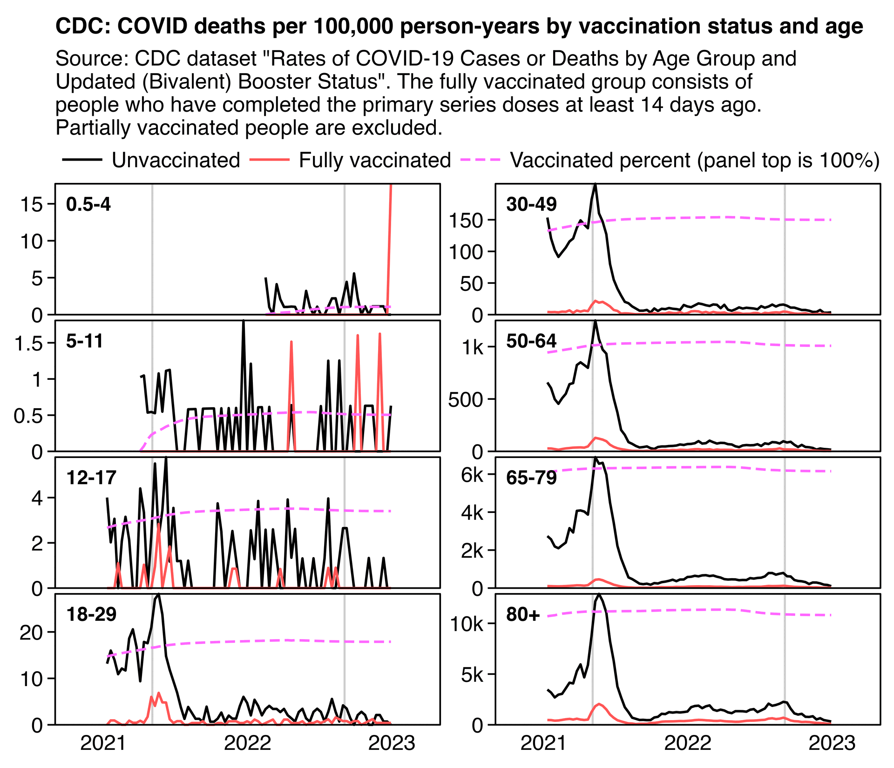
In the CDC dataset there is a total of 55,978 COVID deaths in vaccinated people and 76,295 COVID deaths in unvaccinated people. In the code below I calculated that if vaccinated people would've had the same COVID mortality rate as unvaccinated people for each combination of week and age group, there would've been a total of 525,747 COVID deaths in vaccinated people, which is almost 10 times higher than the actual number of COVID deaths in vaccinated people:
# downloaded from data.cdc.gov/Public-Health-Surveillance/Rates-of-COVID-19-Cases-or-Deaths-by-Age-Group-and/54ys-qyzm
t=fread("https://sars2.net/f/Rates_of_COVID-19_Cases_or_Deaths_by_Age_Group_and_Updated__Bivalent__Booster_Status_20241231.csv")
# exclude rows where outcome is case, rows where only people with a booster are counted as vaccinated, and rows for all ages
t=t[outcome=="death"&vaccination_status=="vaccinated"&age_group!="all_ages"]
# turn the column for age groups into a factor so it gets sorted properly
t[,age_group:={x=unique(age_group);factor(age_group,x[order(as.integer(sub("[-+].*","",x)))])}]
# calculate sum of weekly deaths and mean of weekly population sizes for each age group
# calculate expected vaccinated deaths by multiplying vaccinated population size with unvaccinated mortality rate
a=t[,.(unvaxpop=mean(unvaccinated_population),vaxpop=mean(vaccinated_population),
unvaxdead=sum(unvaccinated_with_outcome),vaxdead=sum(vaccinated_with_outcome),
expected_vax_dead=sum(unvaccinated_with_outcome/unvaccinated_population*vaccinated_population)),,age_group]
# add a row for the total in all ages
a=rbind(a,a[,lapply(.SD,sum),.SDcols=-1][,age_group:="Total"])
# ratio of how many times higher vaccinated deaths would've been at unvaccinated mortality rates
a[,expected_vs_actual_vax_dead:=expected_vax_dead/vaxdead]
print(mutate_at(mutate_at(a,2:6,round),7,round,1),r=F)
# age_group unvaxpop vaxpop unvaxdead vaxdead expected_vax_dead expected_vs_actual_vax_dead
# 0.5-4 4796556 210137 45 1 2 1.8
# 5-11 8680746 3053111 44 3 14 4.5
# 12-17 4226753 5727495 87 14 111 8.0
# 18-29 8004547 13083352 749 167 1094 6.6
# 30-49 9128129 23799554 5956 1427 13781 9.7
# 50-64 4335462 19330422 16680 6703 68197 10.2
# 65-79 1318177 13739954 28308 19918 289130 14.5
# 80+ 625606 3938661 24426 27745 153419 5.5
# Total 41115976 82882686 76295 55978 525747 9.4
So even though my calculation included only a bit over a third of the US population and it only applied to the period of October 3rd 2021 to April 1st 2023, I still got a figure of 469,769 COVID deaths averted by vaccination (from 525747-55978).
On CDC WONDER the total number of deaths with underlying cause COVID was 292,316 in the period of October 3rd 2021 to April 1st 2023, 304,643 in earlier weeks of the MMWR year 2021, and 269,871 between April 2nd 2023 and February 28th 2025. [https://wonder.cdc.gov/mcd-icd10-provisional.html] So the period included in the CDC dataset only accounted for about 33.7% of all COVID deaths since the start of the MMWR year 2021.
The average weekly number of people included in the CDC dataset is about 120 million, which is about 36.0% of the average US resident population estimate between October 2021 and March 2023:
t[,sum(vaccinated_population+unvaccinated_population),mmwr_week][,mean(V1)] # 119884655
us=fread("http://sars2.net/f/uspopdeadmonthly.csv")
us[date>="2021-10"&date<="2023-03",sum(pop),date][,mean(V1)] # 333297623
So I got 469,769 deaths averted by vaccination in a subset of about 36.0% of the US population that was observed for a period that accounted for about 33.7% of all COVID deaths in the post-vaccine era. The calculation 469769/.360/.337 would give about 3.9 million COVID deaths averted by vaccination in the entire US population since the start of 2021. My estimate might be too high, because I didn't take the healthy vaccinee effect into account, and I didn't take into account that in early 2021 there were not yet as many people vaccinated as during the time period included in the CDC dataset. And I also didn't take into account that unvaccinated people acquired natural immunity over time, so compared to the period included in the CDC dataset, the ratio between unvaccinated and vaccinated COVID mortality was earlier higher but later lower (even though I'm not sure if adjusting for natural immunity would increase or reduce my estimate for the number of lives saved by vaccines).
Kirsch has an anonymous source who works at HHS who has given him several sets of data from Medicare, which includes a spreadsheet that shows the number of deaths by days since vaccination among people who were vaccinated in 2021: https://kirschsubstack.com/p/data-from-us-medicare-and-the-new.
Kirsch published the spreadsheet on his S3 server in December 2023, but I uploaded the spreadsheet here so it's easier to download: f/COVID_vax_jan_feb_mar_2021_plus_ALL_deaths_in_medicare_per_day.xlsx.
In the spreadsheet there is a very low number of deaths in the first days following vaccination due to the healthy vaccinee effect. The average number of deaths on days 0 to 6 since vaccination is about 1,763, but it's only about 43% of the average number of deaths on days 100 to 365 since vaccination which is about 4,047:
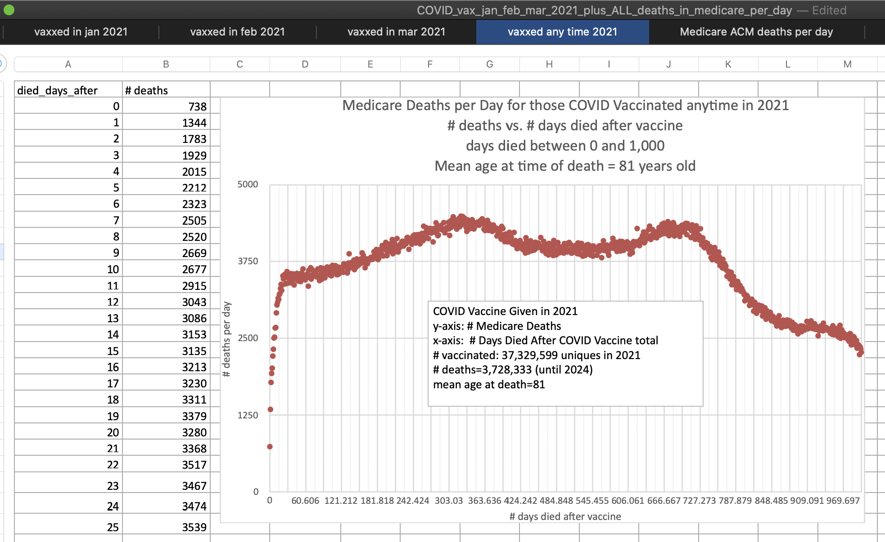
The spreadsheet also shows the daily number of deaths in unvaccinated people (which includes people who were actually vaccinated but who had no vaccination record known to Medicare):
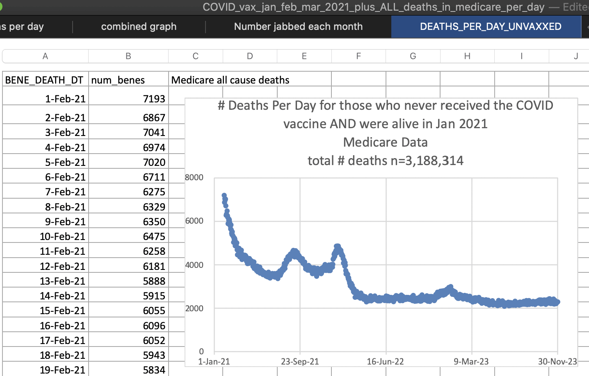
In the spreadsheet there is a total of 2,787,479 deaths in the year 2021, out of which 1,395,511 deaths were in unvaccinated people or people with no known vaccination record, so about 50% of all deaths are in unvaccinated people. However deaths in unvaccinated people are missing from January 2021, so if January is excluded then about 54% of all deaths in 2021 are in unvaccinated people (which again includes people with no known vaccination record).
Medicare is generally only available to people aged 65 and above, but it is also available to younger people with certain medical conditions or disabilities. About 98% of the US population aged 65 and above is enrolled on Medicare.
On CDC WONDER there are 2,494,699 deaths among US residents aged 65 and above in 2021, which is actually about 11% lower than the number of deaths in the Medicare spreadsheet. The extra deaths in the Medicare spreadsheet might be due to people under the age of 65, people who live in overseas territories like Puerto Rico, or people who are not US residents. People in overseas territories like Puerto Rico are eligible for Medicare but they are excluded from the mortality data at CDC WONDER. Non-US residents are also excluded from CDC WONDER but they may be eligible for Medicare if they have a work history in the United States.
But anyway, in the spreadsheet of the Medicare data, there is such a low number of deaths in the days following vaccination that there are only 12,344 people who were vaccinated in 2021 but who died 0 to 6 days from vaccination.
In contrast when I excluded non-US reports at VAERS, there were a total of 3,497 reports for people whose vaccine type was listed as COVID-19, whose vaccination date was in 2021, and whose date of death was within 0 to 6 days from vaccination: [https://vaers.hhs.gov/data/datasets.html]
t=do.call(rbind,lapply(2020:2024,\(i)
Reduce(merge,lapply(c("DATA","VAX","SYMPTOMS"),\(x)fread(paste0(i,"VAERS",x,".csv"))))))
d=t[VAX_TYPE=="COVID19"&DATEDIED!=""&STATE!="FR"] # FR is foreign reports
d[,DATEDIED:=as.Date(DATEDIED,"%m/%d/%Y")]
d[,VAX_DATE:=as.Date(VAX_DATE,"%m/%d/%Y")]
d[year(VAX_DATE)==2021,sum(as.integer(DATEDIED-VAX_DATE)%in%0:6)] # 3497
So if you divide 12,344 by 3,497, the Medicare spreadsheet has only about 3.5 times more people who died within 0 to 6 days from vaccination than VAERS. So it doesn't seem to leave room for a 40-fold underreporting factor proposed by Kirsch (unless the proportion of unreported deaths is much lower during the first week from vaccination than during later weeks, or unless the underreporting factor is lower for reports that involved a death than other reports, or unless the underreporting factor was lower in 2021 than subsequent years).
In the Medicare spreadsheet the date of vaccination is the date of the earliest known vaccine dose, so if for example someone got the second dose 21 days after the first dose and died on the same day, it will be listed as a death 21 days after vaccination and not 0 days after vaccination. So if for example the Medicare benificiaries who received one or more vaccine doses in 2021 received on average 2 doses in 2021, and if the risk of dying in the weeks after the second or third dose was similar to the risk of dying in the week after the first dose, then the actual number of deaths on the week of vaccination might be twice as high as the figure listed in the spreadsheet. But even if you multiply the number of deaths on the week of vaccination in the Medicare spreadsheet by 2, it's still only about 7 times higher than the number of people who died on the week of vaccination at VAERS.
The Medicare spreadsheet is missing deaths in people who were not enrolled on Medicare, which includes most people under the age of 65. And the spreadsheet is also missing the number of days between vaccination and death for people who had no vaccination record known to Medicare. But the spreadsheet still probably includes data for the time between vaccination and death for the majority of US residents who died after being vaccinated in 2021, because on CDC WONDER ages 65 and above account for about 72% of all deaths in 2021.
The number of people who were vaccinated in 2021 and who died on the day of vaccination was 426 at VAERS and 738 in the Medicare spreadsheet, so the number of deaths in VAERS is about 58% of the number of deaths in the spreadsheet. On the day after vaccination the ratio increases to about 67% because there's 906 deaths in VAERS and 1344 deaths in the Medicare spreadsheet. However on subsequent days the ratio gradually gets lower, until during days 50 to 300 it stabilizes around the range of 1-2%, even though after day 300 the ratio falls even further:
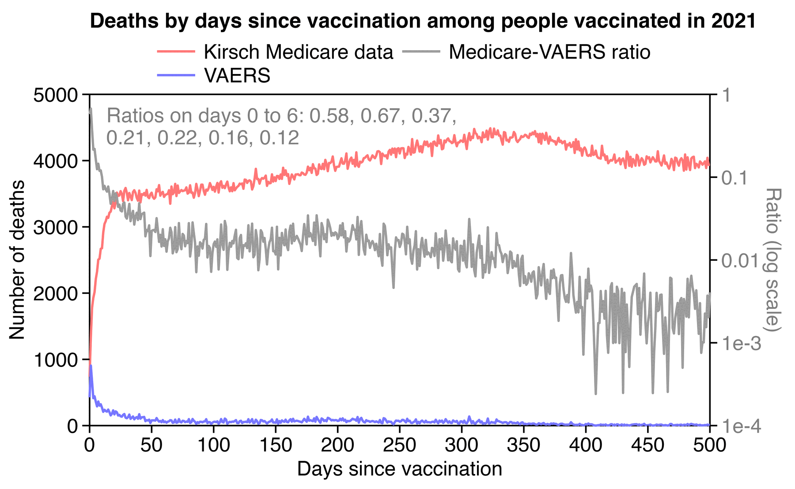
library(data.table);library(ggplot2)
t=do.call(rbind,lapply(2020:2024,\(i)Reduce(merge,lapply(c("DATA","VAX","SYMPTOMS"),\(x)fread(paste0(i,"VAERS",x,".csv"))))))
d=t[VAX_TYPE=="COVID19"&DATEDIED!=""&STATE!="FR"]
d[,DATEDIED:=as.Date(DATEDIED,"%m/%d/%Y")]
d[,VAX_DATE:=as.Date(VAX_DATE,"%m/%d/%Y")]
p=d[year(VAX_DATE)==2021,.(y=.N,z=2),.(x=as.integer(DATEDIED-VAX_DATE))]
f="COVID_vax_jan_feb_mar_2021_plus_ALL_deaths_in_medicare_per_day.xlsx"
download.file(paste0("https://sars2.net/f/",f),f)
med=setDT(read_excel(f,sheet=4))
p=rbind(p,med[,.(x=`died_days_after`,y=`# deaths`,z=1)])
xmin=0;xmax=500;ymin=0;ymax=5000;xbreak=0:10*50;ybreak=0:5*1000
p=p[x%in%xmin:xmax]
break2=seq(0,ymax,,5);lab2=c("1e-4","1e-3","0.01","0.1","1")
p=na.omit(rbind(p,dcast(p,x~z,value.var="y")[x>=0,.(x,y=`2`/`1`,z=3)]))
note=stringr::str_wrap(paste0("Ratios on days 0 to 6: ",p[z==3&x<7,paste(sprintf("%.2f",y),collapse=", ")]),40)
p[z==3,y:=(log10(y)+4)/4*ymax]
p[,z:=factor(z,,c("Kirsch Medicare data","VAERS","Medicare-VAERS ratio"))]
ggplot(p,aes(x,y,z))+
annotate("rect",xmin=xmin,xmax=xmax,ymin=ymin,ymax=ymax,linewidth=.4,fill=NA,color="black",lineend="square")+
annotate("text",x=xmax*.027,y=ymax*.96,lineheight=.9,vjust=1,hjust=0,label=note,size=3.9,color="gray50")+
geom_line(aes(color=z),linewidth=.6)+
labs(x="Days since vaccination",y="Number of deaths",title="Deaths by days since vaccination among people vaccinated in 2021")+
scale_x_continuous(limits=c(xmin,xmax),breaks=xbreak)+
scale_y_continuous(limits=c(ymin,ymax),breaks=ybreak,sec.axis=sec_axis(trans=~.*1,breaks=break2,labels=lab2,name="Ratio (log scale)"))+
scale_color_manual(values=c("#f77","#77f","gray60"))+
coord_cartesian(clip="off",expand=F)+
guides(color=guide_legend(ncol=2,byrow=F))+
theme(axis.text=element_text(size=11,color="black"),
axis.ticks=element_line(linewidth=.4,color="black"),
axis.ticks.length=unit(4,"pt"),
axis.text.y.right=element_text(color="gray50"),
axis.title.y.right=element_text(color="gray50"),
legend.background=element_blank(),
legend.box.spacing=unit(0,"pt"),
legend.key=element_blank(),
legend.key.height=unit(13,"pt"),
legend.key.width=unit(26,"pt"),
legend.margin=margin(,,4),
legend.position="top",
legend.spacing.x=unit(2,"pt"),
legend.spacing.y=unit(0,"pt"),
legend.text=element_text(size=11,vjust=.5),
legend.title=element_blank(),
panel.background=element_blank(),
plot.margin=margin(5,5,5,5),
plot.title=element_text(size=11.3,face=2,margin=margin(2,,4)))
ggsave("1.png",width=6,height=3.7,dpi=300*4)
system("magick 1.png -resize 25% -colors 256 1.png")
Kirsch has been saying that the CFR went up in the United States in the first months after the vaccine rollout which shows that vaccines were not effective.
Normally CFR is calculated by comparing an aggregate statistic for the number of cases by date against an aggregate statistic for the number of deaths by date, so the cases have to be shifted forwards or the deaths have to be shifted backwards to account for the delay between case onset and death. For example in this US nursing home data, there was an upwards trend CFR during the first 8 weeks of 2021 when I didn't shift the cases, but it changed to a downwards trend when I shifted the cases forwards by 3 weeks:
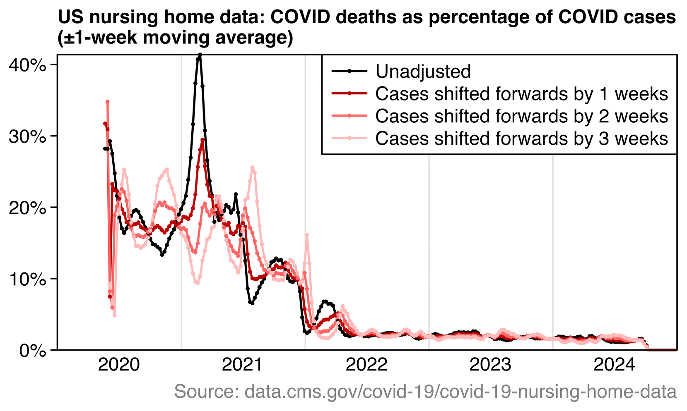
system("wget https://data.cms.gov/sites/default/files/dataset_zips/ea365a77467a04182b55114c5791c2e3/COVID-19%20Nursing%20Home%20Data.zip;unzip 'COVID-19 Nursing Home Data.zip'")
library(data.table);library(ggplot2)
ma=\(x,b=1,f=b){x[]=rowMeans(embed(c(rep(NA,b),x,rep(NA,f)),f+b+1),na.rm=T);x}
d=fread(Sys.glob("COVID-19 Nursing Home Data/*/COVID-19 Nursing Home Data *.csv"))
setnames(d,"Residents Weekly COVID-19 Deaths","dead")
setnames(d,"Residents Weekly Confirmed COVID-19","case")
d[,date:=as.Date(`Week Ending`,"%m/%d/%y")-3]
a=d[,.(dead=sum(dead,na.rm=T),case=sum(case,na.rm=T)),date]
a[,shifted1:=c(rep(0,1),head(case,-1))]
a[,shifted2:=c(rep(0,2),head(case,-2))]
a[,shifted3:=c(rep(0,3),head(case,-3))]
lab=c("Unadjusted",paste0("Cases shifted forwards by ",1:3," weeks"))
p=a[,.(x=rep(date,4),y=rep(ma(dead,1),2)/c(ma(case,1),ma(shifted1,1),ma(shifted2,1),ma(shifted3,1))*100,z=factor(rep(lab,each=.N),lab))][y!=Inf]
xstart=as.Date("2020-1-1");xend=as.Date("2025-1-1")
xbreak=seq(xstart+182,xend,"year")
p=p[x%in%xstart:xend]
yend=max(p$y,na.rm=T)
ggplot(p,aes(x,y))+
geom_vline(xintercept=seq(xstart,xend,"year"),linewidth=.4,color="gray88",lineend="square")+
geom_line(aes(color=z),linewidth=.6)+
geom_point(aes(color=z),stroke=0,size=1.1)+
labs(x=NULL,y=NULL,title="US nursing home data: COVID deaths as percentage of COVID cases\n(±1-week moving average)",caption="Source: data.cms.gov/covid-19/covid-19-nursing-home-data")+
scale_x_continuous(limits=c(xstart,xend),breaks=xbreak,labels=year(xbreak))+
scale_y_continuous(limits=c(0,yend),labels=\(x)paste0(x,"%"))+
scale_color_manual(values=c("black","#b00","#f66","#fbb"))+
coord_cartesian(clip="off",expand=F)+
guides(color=guide_legend(ncol=1,byrow=F))+
theme(axis.text=element_text(size=11,color="black"),
axis.text.x=element_text(margin=margin(4)),
axis.ticks=element_line(linewidth=.4,color="black"),
axis.ticks.length=unit(4,"pt"),
axis.ticks.length.x=unit(0,"pt"),
axis.title=element_text(size=11,face=2),
axis.title.x=element_text(margin=margin(3)),
axis.title.y=element_text(margin=margin(,2)),
legend.background=element_blank(),
legend.box.background=element_rect(color="black",linewidth=.4),
legend.box.spacing=unit(0,"pt"),
legend.justification=c(1,1),
legend.key=element_blank(),
legend.key.height=unit(13,"pt"),
legend.key.width=unit(26,"pt"),
legend.margin=margin(3,5,3,3),
legend.position=c(1,1),
legend.spacing.x=unit(2,"pt"),
legend.spacing.y=unit(0,"pt"),
legend.text=element_text(size=11,vjust=.5),
legend.title=element_blank(),
panel.background=element_blank(),
panel.border=element_rect(fill=NA,linewidth=.4),
panel.grid.major=element_blank(),
plot.caption=element_text(size=11,color="gray50"),
plot.margin=margin(5,5,5,5),
plot.title=element_text(size=11,face=2,margin=margin(,,4)))
ggsave("1.png",width=5.52,height=3.3,dpi=300*4)
system("magick 1.png -trim -resize 25% -bordercolor white -border 22 -colors 256 1.png")
So based on the nursing home data, whether CFR went up or down in the first two months after the vaccine rollout depends on how many weeks the cases are shifted forwards.
However the CDC has published a dataset which has one row for each COVID case with a total of about 106 million rows, where there's one column for the date of each case and another column which indicates whether the case resulted in a death or not: https://data.cdc.gov/Case-Surveillance/COVID-19-Case-Surveillance-Public-Use-Data/vbim-akqf/about_data. So the CDC dataset makes it possible to calculate CFR without having to shift the cases. But it shows that the percentage of cases that resulted in a death went down each month between December 2020 and March 2021, which contradicts Kirsch's claim that the CFR went up after the vaccine rollout:
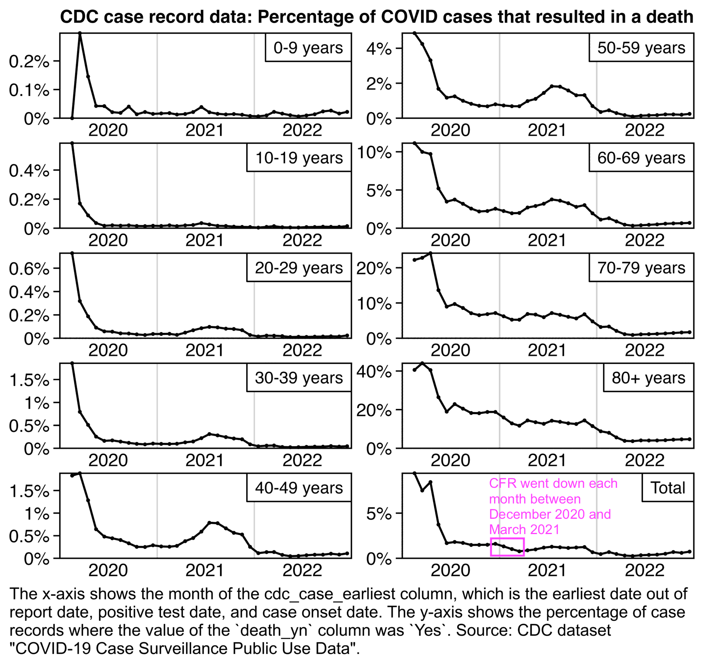
library(data.table);library(ggplot2)
t=fread("COVID-19_Case_Surveillance_Public_Use_Data_20250216.csv")
a=t[,.N,.(date=cdc_case_earliest_dt,age=age_group,died=death_yn)]
a[is.na(age),age:="Missing"]
a[,age:=sub("Years","years",(sub(" - ","-",age)))]
a[,age:=factor(age,unique(age))]
a[,month:=substr(as.Date(date,"%Y/%m/%d"),1,7)]
a=a[month!="2020-01"]
a=a[,.(case=sum(count),dead=sum(count[died=="Yes"])),.(month,age)]
a=rbind(a,a[,.(dead=sum(dead),case=sum(case),age="Total"),month])
a=a[age!="Missing"][,age:=droplevels(age)]
p=a[,.(x=as.Date(paste0(month,"-1")),y=dead/case*100,age)]
xstart=as.Date("2020-1-1");xend=as.Date("2023-1-1")
p=p[x%in%xstart:xend];xbreak=seq(xstart+182,xend,"year")
ggplot(p,aes(x+15,y))+
facet_wrap(~age,ncol=2,dir="v",scales="free")+
geom_vline(xintercept=seq(xstart,xend,"year"),linewidth=.4,color="gray83")+
geom_hline(data=p[,range(c(0,y)),age],aes(yintercept=V1),linewidth=.4,lineend="square")+
geom_vline(xintercept=c(xstart,xend),linewidth=.4,lineend="square")+
geom_line(linewidth=.6)+
geom_point(stroke=0,size=1.1)+
geom_label(data=p[,max(y),age],aes(label=age,y=V1),x=xend,lineheight=.5,hjust=1,vjust=1,size=3.6,fill="white",label.r=unit(0,"pt"),label.padding=unit(5,"pt"),label.size=.4)+
labs(x=NULL,y=NULL,title="CDC case record data: Percentage of COVID cases that resulted in a death")+
scale_x_continuous(limits=c(xstart,xend),breaks=xbreak,labels=year(xbreak))+
scale_y_continuous(limits=c(0,NA),breaks=\(x)pretty(x,3),labels=\(x)paste0(x,"%"))+
coord_cartesian(clip="off",expand=F)+
guides(color=guide_legend(nrow=1))+
theme(axis.text=element_text(size=11,color="black"),
axis.text.x=element_text(margin=margin(3)),
axis.ticks=element_line(linewidth=.4,color="black"),
axis.ticks.length=unit(4,"pt"),
axis.ticks.length.x=unit(0,"pt"),
axis.title=element_text(size=11,face=2),
axis.title.x=element_text(margin=margin(3)),
axis.title.y=element_text(margin=margin(,2)),
legend.background=element_blank(),
legend.box.spacing=unit(0,"pt"),
legend.justification="left",
legend.key=element_blank(),
legend.key.height=unit(13,"pt"),
legend.key.width=unit(26,"pt"),
legend.position="top",
legend.spacing.x=unit(2,"pt"),
legend.margin=margin(,,5),
legend.text=element_text(size=11,vjust=.5),
legend.title=element_blank(),
panel.background=element_blank(),
panel.grid.major=element_blank(),
panel.spacing.x=unit(3,"pt"),
panel.spacing.y=unit(2,"pt"),
plot.caption=element_text(size=10,color="gray50"),
plot.margin=margin(5,5,5,5),
plot.title=element_text(size=11,face=2,margin=margin(1,,4)),
strip.background=element_blank(),
strip.text=element_blank())
ggsave("1.png",width=5.97,height=5,dpi=300*4)
sub="The x-axis shows the month of the cdc_case_earliest column, which is the earliest date out of report date, positive test date, and case onset date. The y-axis shows the percentage of case records where the value of the `death_yn` column was `Yes`. Source: CDC dataset \"COVID-19 Case Surveillance Public Use Data\"."
system(paste0("magick 1.png -trim 1.png;w=`identify -format %w 1.png`;magick 1.png \\( -size $[w]x -font Arial -interline-spacing -3 -pointsize $[42*4] caption:'",gsub("'","'\\\\'",sub),"' -splice x80 \\) -append -resize 25% -bordercolor white -border 24 1.png"))
The plot above also shows that ages 80+ and 70-79 had higher CFR in late 2020 than during the Delta wave, but the groups between 20-29 and 50-59 had much higher CFR during the Delta wave than in late 2020, which might be because the younger age groups had a much higher percentage of unvaccinated people during the Delta wave than the older age groups.
The drop in CFR between December 2020 and March 2021 was also higher in ages 80+ and 70-79 which already had a high percentage of vaccinated people by March 2021, but the drop was much lower in ages 30-39 and 40-49:
| Age |
December 2020 CFR |
March 2021 CFR |
Drop |
|---|---|---|---|
| 0-9 | 0.015% | 0.013% | 15% |
| 10-19 | 0.017% | 0.014% | 14% |
| 20-29 | 0.036% | 0.029% | 21% |
| 30-39 | 0.103% | 0.099% | 4% |
| 40-49 | 0.288% | 0.275% | 4% |
| 50-59 | 0.794% | 0.682% | 14% |
| 60-69 | 2.550% | 1.994% | 22% |
| 70-79 | 7.157% | 5.250% | 27% |
| 80+ | 18.789% | 11.682% | 38% |
The death record data in NVSS that can be queried through CDC WONDER has been published here as fixed-width text files: https://www.cdc.gov/nchs/nvss/mortality_public_use_data.htm. At CDC WONDER the number of deaths is suppressed on rows with 1 to 9 deaths but the deaths are not suppressed in the fixed-width files, so the files are useful for analyzing data for rare causes of death like vaccine-related deaths.
I came up with the list below of ICD codes that are potentially related to vaccine injury, but my list is probably missing some codes. Relative to a 2015-2019 average baseline, the NVSS files have about 130 extra deaths in 2021 for the code T88.1 ("Other complications following immunization, not elsewhere classified"), 140 for T88.7 ("Unspecified adverse effect of drug or medicament"), 193 for Y59.0 ("Viral vaccines"), and 13 for Y59.9 ("Vaccine or biological substance, unspecified"). However many death records include two or more of the codes. For underlying cause of death, the maximum yearly number of deaths for any of the codes shown below was 2 before 2021, but in 2021 there were 66 deaths with underlying cause Y59.0 ("Viral vaccines") and 5 deaths with the underlying cause Y59.9 ("Vaccine or biological substance, unspecified"):
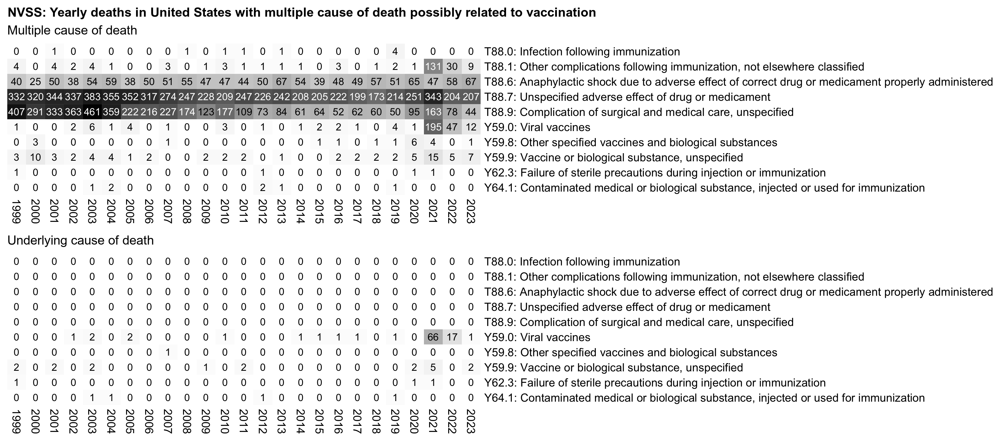
# https://sars2.net/stat.html#Download_fixed_width_and_CSV_files_for_the_NVSS_data_used_at_CDC_WONDER
v=fread("xz -dc http://sars2.net/f/vital.csv.xz")
icd3=fread(text="code;cause
Y62.3;Failure of sterile precautions during injection or immunization
Y64.1;Contaminated medical or biological substance, injected or used for immunization")
icd=fread("http://sars2.net/f/wondericd.csv")
icd2=fread("http://sars2.net/f/wonderbyicd.csv.gz")[rowid(code)==1,.(code,cause)]
icd=rbind(icd3,icd2,icd)[rowid(code)==1]
a=v[,.(dead=c(sum(mcd),sum(ucd)),type=1:2),.(cause,year)]
a=a[cause%like%"Y59[089]|T88[01679]|Y623|Y641"]
a[,code:=ifelse(nchar(cause)==3,cause,sub("(...)(.)","\\1.\\2",cause))]
a=merge(a[,cause:=NULL],icd)
ar=a[,tapply(dead,.(type,paste0(code,": ",cause),year),c)]
ar[is.na(ar)]=0
maxcolor=max(ar);exp=.7
for(i in 1:2){
m=ar[i,,]
pheatmap::pheatmap(m^exp,filename=paste0("i",i,".png"),display_numbers=round(m),
cluster_rows=F,cluster_cols=F,legend=F,cellwidth=19,cellheight=14,fontsize=9,fontsize_number=8,
border_color=NA,na_col="white",
number_color=ifelse(m^exp>maxcolor^exp*.4,"white","black"),
breaks=seq(0,maxcolor^exp,,256),
sapply(seq(1,0,,256),\(i)rgb(i,i,i)))}
system(paste0("w=`identify -format %w i1.png`;pad=20;magick -size $[w-pad*2]x -font Arial-Bold -pointsize 42 \\( caption:'NVSS: Yearly deaths in United States with multiple cause of death possibly related to vaccination' -font Arial caption:'Multiple cause of death' -splice $[pad]x10 \\) i1.png \\( caption:'Underlying cause of death' -splice $[pad]x \\) i2.png -append -trim -bordercolor white -border 24 -colorspace gray 1.png"))
So there seems to have been a genuine increase in vaccine-related deaths in 2021, even though it might be partially because more vaccines were administered in 2021 than in earlier years.
There were 66 death records in 2021 with the underlying cause Y59.0 ("Viral vaccines"), but the following code shows the complete list of causes of death for a subset of 8 random records. In the case of 5 of 8 records the immediate cause of death was T88.1 ("Other complications following immunization, not elsewhere classified"), but for the three other records the immediate causes were listed as cardiac arrest, anaphylactic shock, and R99 (which is used for unknown or undefined causes of death):
system("wget https://ftp.cdc.gov/pub/Health_Statistics/NCHS/Datasets/DVS/mortality/mort2021us.zip;unzip mort2021us.zip")
t=setDT(readr::read_fwf("VS21MORT.DUSMCPUB_r20230320.txt",fwf_cols(restatus=c(20,20),age=c(70,73),ucod=c(146,149),cause1=c(165,170),cause2=c(172,177),cause3=c(179,184),cause4=c(186,191),cause5=c(193,198),cause6=c(200,205),cause7=c(207,212),cause8=c(214,219),cause9=c(221,226),cause10=c(228,233),cause11=c(235,240),cause12=c(242,247),cause13=c(249,254),cause14=c(256,261),cause15=c(263,268),cause16=c(270,275),cause17=c(277,282),cause18=c(284,289),cause19=c(291,296),cause20=c(298,303)),col_types=cols(cause14=col_character())))
t=t[restatus!=4]
t[,age:=ifelse(age%/%1000%in%c(1,9),age%%1000,0)]
l=na.omit(t[,.(id=.I,age,pos=rep(1:20,each=.N),ucod,cause=unlist(.SD,,F)),.SDcols=patterns("cause")])
l[,line:=substr(cause,1,1)][,code:=substr(cause,3,6)]
ua=\(x,y,...){u=unique(x);y(u,...)[match(x,u)]}
dotcode=\(x)ifelse(x%like%"^ ",substr(x,2,4),sub("(...)(.)","\\1.\\2",x))
l[,code:=ua(code,dotcode)][,ucod:=ua(ucod,dotcode)]
icd=fread("http://sars2.net/f/wondericd.csv")[,setNames(cause,code)]
sub=l[id%in%id[ucod=="Y59.0"]]
set.seed(0)
sub[id%in%sample(unique(id),8),paste0("Age ",age[1],", UCD ",ucod[1]," ",icd[ucod[1]],":\n",paste0(ifelse(line==6,"Part 2",paste0("Part 1, line ",line)),": ",code," ",icd[code],collapse="\n")),id]$V1|>writeLines(sep="\n\n")
Age 73, UCD Y59.0 Viral vaccines: Part 1, line 1: R99 Other ill-defined and unspecified causes of mor... Part 1, line 2: T88.1 Other complications following immunization, not... Part 1, line 2: Y59.0 Viral vaccines Part 2: I25.1 Atherosclerotic heart disease Part 2: I10 Essential (primary) hypertension Part 2: E78.5 Hyperlipidaemia, unspecified Part 2: C61 Malignant neoplasm of prostate Age 73, UCD Y59.0 Viral vaccines: Part 1, line 1: T80.5 Anaphylactic shock due to serum Part 1, line 1: Y59.0 Viral vaccines Part 1, line 3: B24 Unspecified human immunodeficiency virus [HIV] ... Age 81, UCD Y59.0 Viral vaccines: Part 1, line 1: T88.1 Other complications following immunization, not... Part 1, line 1: Y59.0 Viral vaccines Part 1, line 2: I25.5 Ischaemic cardiomyopathy Part 1, line 3: E11.9 Non-insulin-dependent diabetes mellitus, withou... Age 74, UCD Y59.0 Viral vaccines: Part 1, line 1: I46.9 Cardiac arrest, unspecified Part 1, line 2: R58 Haemorrhage, not elsewhere classified Part 1, line 3: T88.1 Other complications following immunization, not... Part 1, line 3: Y59.0 Viral vaccines Age 90, UCD Y59.0 Viral vaccines: Part 1, line 1: T88.1 Other complications following immunization, not... Part 1, line 1: Y59.0 Viral vaccines Part 2: F01.9 Vascular dementia, unspecified Age 65, UCD Y59.0 Viral vaccines: Part 1, line 1: T88.1 Other complications following immunization, not... Part 1, line 1: Y59.0 Viral vaccines Part 2: E78.5 Hyperlipidaemia, unspecified Part 2: I10 Essential (primary) hypertension Part 2: K22.7 Barrett esophagus Part 2: I49.9 Cardiac arrhythmia, unspecified Age 66, UCD Y59.0 Viral vaccines: Part 1, line 1: T88.1 Other complications following immunization, not... Part 1, line 1: Y59.0 Viral vaccines Age 69, UCD Y59.0 Viral vaccines: Part 1, line 1: T88.1 Other complications following immunization, not... Part 1, line 1: Y59.0 Viral vaccines Part 2: F10.2 Mental and behavioural disorders due to use of ... Part 2: I10 Essential (primary) hypertension Part 2: N17.9 Acute renal failure, unspecified
Based on the list above, the deaths at NVSS with the underlying cause Y59.0 seem much more likely to be actually due to vaccination than typical deaths at VAERS.
In February 2025 Kirsch published a Substack post where he presented his supposedly bulletproof arguments that the COVID vaccines did not reduce mortality risk: https://kirschsubstack.com/p/my-bulletproof-arguments-that-the. I'm not sure if his post was meant to be part of the Rootclaim debate or not, but I'll try to address a couple of points he raised anyway.
Kirsch wrote:
My favorite takedown articles is this research letter by Vinay Prasad which pointed out that a prominent study showing the vaccinated had 10X lower COVID mortality than the unvaccinated simply forgot to point out that the disparity happened during non-COVID periods as well.
In one of the most important revelations of the pandemic, Høeg et al. (2024) pointed out that in Arbel, 2021, the non-COVID mortality (NCACM) differences more than completely accounted for the 94.6% lower mortality benefit claimed in the study. The vaccine didn't reduce mortality at all; it increased it!
In their reply, Arbel et al. acknowledged the failure, and then tried unsuccessfully to rescue their result with a ridiculous new analysis. They never corrected their original paper to note that the difference in mortality happened in non-COVID periods.
Kirsch wrote that "the disparity happened during non-COVID periods as well". But the study by Arbel et al. did not even compare mortality during a COVID period and a non-COVID period. The study lasted from August 6th 2021 until September 29th 2021 which coincided with the Delta wave, so there was high COVID mortality in Israel during the entire period of the study. [https://ourworldindata.org/explorers/covid?Metric=Confirmed+deaths&Interval=7-day+rolling+average&country=~ISR]
The paper by Arbel et al. said: "Death due to Covid-19 occurred in 65 participants in the booster group (0.16 per 100,000 persons per day) and in 137 participants in the nonbooster group (2.98 per 100,000 persons per day)." [https://www.nejm.org/doi/10.1056/NEJMoa2115624] But 2.98/0.16 is about 19, so even though the 2-dose group was younger than the 3-dose group, the 2-dose group is still supposed to have had about 19 times higher crude COVID mortality rate, which doesn't seem right.
Høeg et al. calculated that based on the numbers provided by Arbel et al., people with 2 doses had about 19 times higher crude non-COVID mortality rate than people with 3 doses, so the ratio between the crude non-COVID mortality rates was close to the same as the ratio between the crude COVID mortality rates. Høeg's response to Arbel's paper said: "However, using the person-days of exposure included in the 2021 article by Arbel et al. and the deaths not related to Covid-19 reported in the subsequent letter, we estimated the mortality not related to Covid-19, according to vaccination status, with the following formula: the ratios of total deaths not related to Covid-19 to Covid-19-related deaths, according to vaccination group, multiplied by mortality due to Covid-19, according to vaccination group, which accounts for person-days of exposure. The mortality not related to Covid-19 was calculated as (441/65)×0.16=1.09 per 100,000 persons per day in the booster group as compared with (963/137)×2.98=20.95 per 100,000 persons per day in the nonbooster group." [https://www.nejm.org/doi/full/10.1056/NEJMc2306683]
Arbel et al. responded to Høeg that after adjusting for variables like age, SES, and comorbidities, the hazard ratio for non-COVID deaths was only about 4 times higher in the 2-dose group than the 3-dose group: "With adjustment for the same covariates that were included in the analyses of Covid-19-related death in our article, the adjusted hazard ratio for death not due to Covid-19 was 0.23 (95% confidence interval [CI], 0.20 to 0.26) among participants who received the booster (Table 1), a finding that is 2.3 times as high as the adjusted hazard ratio for death due to Covid-19 (hazard ratio, 0.10; 95% CI, 0.07 to 0.14)." [ibid.]
Arbel's Table 1 shows that the average age was about 4 years younger in the 2-dose group than the 3-dose, and the 2-dose group generally had a lower or similar level of comorbidities as the 3-dose group. So it doesn't makes sense that the 2-dose group got about 19 times higher crude non-COVID mortality rate than the 3-dose group but only about 4 times higher adjusted hazard ratio for non-COVID mortality, because adjusting for age and comorbidities should've magnified the difference in mortality between the groups and not made it smaller. The 2-dose group had lower SES than the 3-dose group, but SES had little effect on the hazard ratio in Arbel's model.
Arbel's paper says: "A total of 843,208 participants met the eligibility criteria, of whom 758,118 (90%) received the booster during the 54-day study period. Death due to Covid-19 occurred in 65 participants in the booster group (0.16 per 100,000 persons per day) and in 137 participants in the nonbooster group (2.98 per 100,000 persons per day)." [https://www.nejm.org/doi/abs/10.1056/NEJMoa2115624] So if you reverse engineer the observation time by dividing the COVID deaths by the COVID deaths per person-days, the observation time is about 4,597,315 person-days in the 2-dose group (from 137/2.98*1e5) and about 40,625,000 person-days in the booster group (from 65/0.16*1e5). So the 2-dose group accounts for only about 10.2% of total observation time, which is nearly the same as the percentage of participants who did not get a booster during the study period which is about 10.1% (1-758118/843208).
Arbel's response to Høeg said: "With regard to a potential healthy vaccinee bias, all participants in our study started at an 'unboosted' status, which was changed to a 'boosted' status 7 days after vaccination, and 9 of 10 participants contributed follow-up data in both statuses (i.e., to both the booster group and the nonbooster group)." [https://www.nejm.org/doi/full/10.1056/NEJMc2306683] So even if all subjects would've gotten the booster dose on the first day of the study, the subjects would've still contributed observation time to the two-dose group for the first 7 days after vaccination, but 7 days is about 13% of the entire study period of 55 or 54 days. (The study lasted from August 6th 2021 until September 29th 2021 which is 55 days inclusive of both the starting and ending date, but the duration of the study was reported as 54 days by Arbel, which might be if for example the study started and ended on the same hour of the day, or if the study started and ended during working hours so the duration was closer to 54 than 55 full days, or it might also be that Arbel et al. made an error in calculating the duration of the study period. But regardless 7/54 and 7/55 are both about 13%, which is higher than my reverse engineered percentage of observation time in the 2-dose group out of total observation time.)
So anyway, I think Arbel et al. made an error in calculating the rate of COVID deaths per 100,000 person-days, so that the subjects contributed person-days to the 3-dose category and not the 2-dose category even in the days before the subjects got a 3rd dose. Otherwise it's not realistic that the 2-dose group would account for only about 10.2% of total person-days.
Next in order to verify if Arbel's adjusted odds ratios were consistent with other datasets, I tried to calculate similar odds ratios in the English ONS data. [https://www.ons.gov.uk/peoplepopulationandcommunity/birthsdeathsandmarriages/deaths/bulletins/deathsinvolvingcovid19byvaccinationstatusengland/deathsoccurringbetween1april2021and31may2023] I included only ages 50 and above like Arbel, but I looked at the last 4 months of 2021 instead of only August and September 2021, since the UK took longer than Israel to reach high booster coverage. [https://ourworldindata.org/grapher/covid-vaccine-booster-doses-per-capita?country=ISR~GBR] I adjusted the odds ratio only for the variables of age group and observation month since data for comorbidities was not available. Relative to a baseline of people with 2 doses, people with 3 doses had an odds ratio of about 0.08 for COVID deaths, 0.25 for non-COVID deaths, and 0.23 for deaths from all causes (so the results are similar to Arbel who got an odds ratio of about 0.10 for COVID deaths and 0.23 for non-COVID deaths):
t=fread("http://sars2.net/f/ons.csv")
t=t[ed==9&age%like%"^[5-9]0"&month>="2021-09"&month<="2021-12"]
a=rbind(t[status%like%"Second"][,dose:=2],t[status%like%"Third"][,dose:=3])
a=a[,.(dead=sum(dead),pop=sum(pop)),.(month,age,dose,cause)]
lm=glm(dead~dose+month+age+offset(log(pop)),poisson,a[cause=="Deaths involving COVID-19"])
exp(coef(lm))[2] # 0.07899472
lm=glm(dead~dose+month+age+offset(log(pop)),poisson,a[cause=="Non-COVID-19 deaths"])
exp(coef(lm))[2] # 0.2457514
lm=glm(dead~dose+month+age+offset(log(pop)),poisson,a[cause=="All causes"])
exp(coef(lm))[2] # 0.2315978
But in the English data the crude non-COVID mortality rate was only about 1.2 times higher in people with 2 doses than people with 3 doses (and not about 19 times higher like in Høeg's calculation):
a[cause=="Non-COVID-19 deaths",.(cmr=sum(dead)/sum(pop)*1e5),dose]|>print(r=F) # dose cmr # 2 2329.769 # 3 1953.398
Next I calculated a similar odds ratio in the Czech record-level data, so that I again included ages 50 and above and I looked at the last 4 months of 2021, and I calculated a mortality risk adjusted for age group and observation month. People with 3 doses had an all-cause mortality risk of about 0.28 relative to people with 2 doses:
b=fread("http://sars2.net/f/czbuckets.csv.gz")[,age:=pmin(age,100)%/%5*5]
b=b[month>="2021-09"&month<="2021-12"&age>=50]
a=b[dose==3,.(dead=sum(dead),pop=sum(alive),dose=3),.(month,age)]
a=rbind(a,b[dose==2,.(dead=sum(dead),pop=sum(alive),dose=2),.(month,age)])
a[,age:=factor(age)]
lm=glm(dead~dose+month+age+offset(log(pop)),poisson,a)
exp(coef(lm))[2] # 0.2806021
But the all-cause crude mortality rate was only about 1.3 times higher in people with 2 doses than people with 3 doses:
a[,.(cmr=sum(dead)/sum(pop)*365e5),,dose]|>print(r=F) # dose cmr # 2 2548.217 # 3 1997.901
So Arbel's odds ratios seem to be consistent with other datasets but Arbel's crude mortality rates are not.
Kirsch pointed out that relative to people with 2 doses, people with 3 doses had about 94.6% lower crude COVID mortality rate and about 94.8% lower crude non-COVID mortality rate, so therefore Kirsch concluded that the difference in COVID mortality rate between the 2-dose and 3-dose groups was explained by the HVE. But his conclusion was wrong because the crude mortality rates were calculated wrong. Kirsch should've compared Arbel's adjusted hazard ratios instead, which were about 0.10 for COVID deaths and 0.23 for non-COVID deaths.
Kirsch claimed that the booster vaccination did not reduce COVID mortality risk because the difference in COVID mortality between the 3-dose and 2-dose groups was explained by the HVE. But a problem with his claim is that the 3-dose group had a similar COVID mortality risk as the 2-dose group during the first 7 days after vaccination. Arbel et al. wrote: "The hazard ratio for death due to Covid-19 in participants up to 7 days after the administration of the booster, as compared with the nonbooster group, was 0.95 (95% CI, 0.86 to 1.05; P=0.32). However, the hazard ratio for death due to Covid-19 in participants up to 14 days after the administration of the booster, as compared with the nonbooster group, was 0.67 (95% CI, 0.60 to 0.74; P<0.001). Therefore, our assumption of a 7-day lag time between the administration of the booster and booster effectiveness was confirmed." But in contrast the reduction in mortality due to the HVE is generally greater in the week following vaccination than in subsequent weeks, so if the difference in COVID mortality between the 2-dose and 3-dose groups was explained by the HVE, you would expect the difference to be even greater in the first week after vaccination than on subsequent weeks.
Kirsch wrote: [https://kirschsubstack.com/p/my-bulletproof-arguments-that-the]
The easiest way to clearly see the "amplified R0" effect is cumulative COVID cases. Look how the countries were tracking each other until Omicron. You can clearly see the disparity once Omicron hit:
And here's the booster chart showing the boosted countries had the higher COVID cases in the wave after the booster. The "boosters" boosted cases. The graph above should have been completely opposite if vaccines worked.
So they lied about R0. It amplified R0.
However the explanation for why Israel and Denmark had a high number of cases per capita might be that they performed a much higher number of tests per capita than the United States. During the first two months of 2022, the number of tests per capita was about 5 times higher in both Denmark and Israel than the United States:
t=fread("https://covid.ourworldindata.org/data/owid-covid-data.csv")
d=t[location%in%c("Israel","Denmark","United States")&date>="2022-1-1"&date<="2022-2-28"]
d[,.(new_tests_per_thousand=sum(new_tests_per_thousand,na.rm=T)),location]|>print(r=F)
# location new_tests_per_thousand
# Denmark 1571.140
# Israel 1388.049
# United States 295.654
If instead of COVID cases you look at COVID deaths which is less sensitive to the number of tests performed, the peak 7-day moving average of deaths per capita during the Omicron wave was slightly higher in the United States than in Denmark or Israel: [https://ourworldindata.org/explorers/covid?Metric=Confirmed+deaths&Interval=7-day+rolling+average&country=USA~ISR~DNK]
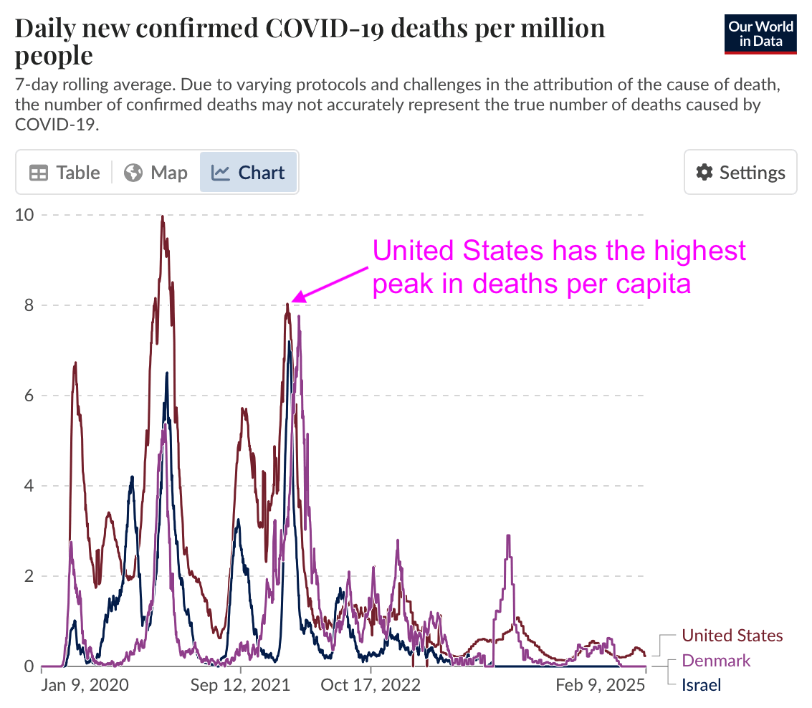
Kirsch wrote:
And finally, the Pfizer Phase 3 clinical trial confirmed the IFR increase as well. If you were vaccinated your IFR was over 10X higher than the unvaccinated making the 2X I found in the data look like rounding error. Thanks to Joe Fraiman for suggesting this. It's not statistically significant because the numbers were too small in the trial to get a solid IFR signal, but it is extremely troubling that this was so lopsided.
Kirsch didn't link to any source. In the original paper about the Pfizer phase 3 trial that was published in December 2020 and that included data up to November 14th 2020, there were zero COVID deaths in both the vaccine and placebo groups. [https://www.nejm.org/doi/full/10.1056/NEJMoa2034577] But Kirsch told me he referred to the subsequent paper that was published in September 2021 and that included data up to March 13th 2021. [https://www.nejm.org/doi/full/10.1056/NEJMoa2110345]
Table S4 of the newer paper shows that there was 1 COVID death in the vaccine group and 2 deaths in the placebo group.
Kirsch seems to have calculated the CFR values of 1.23% and 12.50% by taking the number of cases from the older paper where the observation period ended in November 14th 2020. The older paper said: "There were 8 cases of Covid-19 with onset at least 7 days after the second dose among participants assigned to receive BNT162b2 and 162 cases among those assigned to placebo." But 1/8 and 2/162 match the CFR values shown in Kirsch's table.
However in the newer paper where the observation period extended about 4 months further, ther was also a much higher number of cases. The paper said: "Among 44,486 participants with or without evidence of previous infection who could be evaluated, cases of Covid-19 were observed in 81 vaccine recipients and in 873 placebo recipients, corresponding to a vaccine efficacy of 91.1% (95% CI, 88.8 to 93.0)."
So this is what Kirsch's table should've looked like if he would've taken both the deaths and cases from the same paper:
| Group | Deaths | Cases | CFR | CFR low | CFR high |
|---|---|---|---|---|---|
| Placebo | 2 | 873 | 0.230% | 0.063% | 0.831% |
| Vaccine | 1 | 81 | 1.234% | 0.218% | 6.667% |
It was also misleading that Kirsch's table didn't show the number of deaths and cases but only the CFR ratios. At first I didn't even notice how massive his confidence intervals were, but if his table would've shown that there was only 1 death in the vaccine group and 2 deaths in the placebo group, then it would've been easier to see how the difference in the CFR ratios was not even close to significant. The p-value of the ratios is about 0.61 so it's far from reaching a significance level of 0.05:
prop.test(c(1,2),c(81,873))$p.value # 0.61086
Kirsch wrote: [https://kirschsubstack.com/p/the-czech-republic-record-level-data]
I'll show you how to prove the vaccine was useless using the latest Czech Republic data which was made available in November 2024.
The bottom line is when you compute all cause mortality in vaccinated and unvaccinated in non-COVID periods and then in COVID periods, they have the same ratio:
So it "looks" like that during high COVID periods, the vaccinated die at a rate 3.3X lower than the unvaxxed. But it's a mirage because during NO COVID periods, the same ratio applies.
Also, the 1.5 in the table above means that during peak COVID, mortality for those born in 1950 was 1.5X higher in both vaccinated and unvaccinated cohorts; no difference.
If it was the COVID vaccine making you 3.3X less likely to die if you were born in 1950, we'd all be rushing to get the shot!
The mortality differences between vaxxed and unvaxxed were all due to selection bias because people who choose to be vaccinated have a much lower mortality than people who can't or don't want the vaccine, e.g., they are in hospice and going to die.
In short, the vaccine provided no differential ACM benefit. This spreadsheet makes it crystal clear. There is no place to hide. There is no confounder that can "explain" this.
Getting the data
You download the data and grep for 1950-1954 which gives you an 80M file with around 673K rows. Then you analyze it. Easy peasy.
To make it easier, you can download the 100MB Excel file from my github where I've done all the work for you.
You have to first calculate the number of alive vaxxed and unvaxxed people each day and then you can compute during the COVID and non-COVID periods the number of person weeks at risk of dying and the number of deaths and then normalize that for an annual rate. All the calculations are straightforward.
Kirsch's low-COVID period consisted of June 14th 2021 to September 26th 2021. But especially during the earlier part of his low-COVID period, the ratio between unvaccinated and vaccinated mortality was elevated because there were still many people who had recently gotten the first vaccine dose so they were impacted by the temporal healthy vaccinee effect. His high-COVID period consists of October 4th 2021 to May 8th 2022, but in April 2022 there were no longer that many COVID deaths.
When I edited Kirsch's spreadsheet so that I changed the high-COVID period to the Delta peak on weeks 45 to 52 of 2021 and I changed the low-COVID period to weeks 36 to 42 of 2021 which was before the Delta wave, the ratio between unvaccinated and vaccinated CMR was about 4.29 during the high-COVID period but only about 2.90 during the low-COVID period:
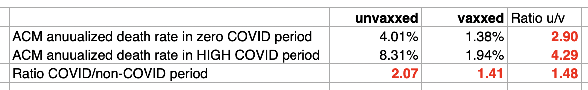
From my next plot you can see that during the peak of the Delta wave in November to December 2021, unvaccinated people had over 3 times higher ASMR than vaccinated people. But in September to October 2021 before the Delta wave, the ratio was only a bit over 2. So the increase in ASMR during the Delta wave was clearly more pronounced in unvaccinated people:
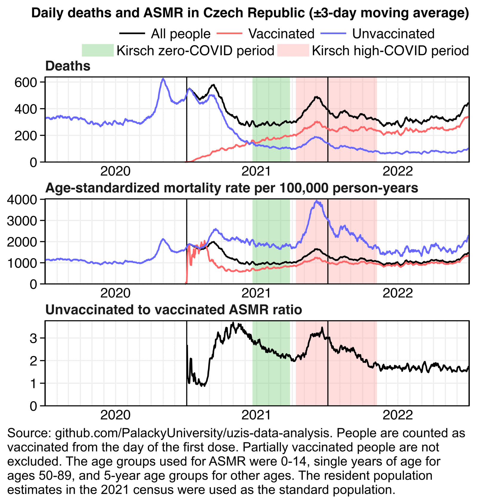
library(data.table);library(ggplot2)
ma=\(x,b=1,f=b){x[]=rowMeans(embed(c(rep(NA,b),x,rep(NA,f)),f+b+1),na.rm=T);x}
cul=\(x,y)y[cut(x,c(y,Inf),,T,F)]
ages=c(0,seq(15,45,5),50:89,seq(90,100,5))
t=fread("http://sars2.net/f/czbucketsdaily.csv.gz")
t[,dose:=pmin(dose,1)]
p=t[,.(y=sum(dead)),.(dose,x=date)]
p=rbind(p,p[,.(y=sum(y),dose=2),x])[,facet:=1]
a=t[,.(dead=sum(dead),pop=sum(alive)),.(dose,x=date,age=cul(age,ages))]
a=rbind(a,a[,.(dead=sum(dead),pop=sum(pop),dose=2),.(x,age)])
std=fread("http://sars2.net/f/czcensus2021pop.csv")
a=merge(a,std[,std:=pop/sum(pop)][,.(std=sum(std)),.(age=cul(age,ages))])
p=rbind(p,a[,.(y=sum(dead/pop*std*365e5),facet=2),.(x,dose)])
p[,y:=ma(y,3),,.(facet,dose)]
p=rbind(p,dcast(p[facet==2],x~dose,value.var="y")[,.(x,y=`0`/`1`,facet=3,dose=2)][y<5])
p[,dose:=factor(dose,,c("Unvaccinated","Vaccinated","All people"))]
p[,facet:=factor(facet,,c("Deaths","Age-standardized mortality rate per 100,000 person-years","Unvaccinated to vaccinated ASMR ratio"))]
xstart=as.Date("2020-1-1");xend=as.Date("2023-1-1");xbreak=seq(xstart+182,xend,"year")
p=p[x%in%xstart:xend]
ybreak=pretty(c(0,p$y),7)
hl=data.table(start=as.Date(c("2021-6-14","2021-10-4")),end=as.Date(c("2021-9-26","2022-5-8")))
hl[,label:=factor(1:2,,c("Kirsch low-COVID period","Kirsch high-COVID period"))]
ggplot(p)+
facet_wrap(~facet,dir="v",scales="free")+
geom_vline(xintercept=seq(xstart,xend,"month"),color="gray92",linewidth=.4)+
geom_rect(data=hl,aes(xmin=start,xmax=end,fill=label),ymin=0,ymax=Inf,alpha=.4,linewidth=.15)+
geom_vline(xintercept=seq(xstart,xend,"year"),color="black",linewidth=.4)+
geom_line(aes(x,y,color=dose),linewidth=.6)+
labs(x=NULL,y=NULL,title="Daily deaths and ASMR in Czech Republic (±3-day moving average)")+
scale_x_continuous(limits=c(xstart-.5,xend+.5),breaks=xbreak,labels=year(xbreak))+
scale_y_continuous(limits=\(x)c(0,max(x)*1.02),breaks=\(x)pretty(x,4))+
scale_color_manual(values=c("#66f","#f66","black"))+
scale_fill_manual(values=c("#7c7","#faa"))+
coord_cartesian(clip="off",expand=F)+
guides(color=guide_legend(order=1),fill=guide_legend(keyheight=unit(1,"pt"),order=2))+
theme(axis.text=element_text(size=11,color="black"),
axis.text.x=element_text(margin=margin(3)),
axis.ticks=element_line(linewidth=.4,color="black"),
axis.ticks.length.x=unit(0,"pt"),
axis.ticks.length.y=unit(4,"pt"),
legend.box.background=element_blank(),
legend.box.spacing=unit(0,"pt"),
legend.box="vertical",
legend.box.just="right",
legend.direction="horizontal",
legend.justification="right",
legend.key=element_blank(),
legend.key.height=unit(13,"pt"),
legend.key.width=unit(26,"pt"),
legend.margin=margin(,,3),
legend.position="top",
legend.spacing.x=unit(3,"pt"),
legend.spacing.y=unit(1,"pt"),
legend.text=element_text(size=11,vjust=.5),
legend.title=element_blank(),
panel.background=element_blank(),
panel.border=element_rect(fill=NA,linewidth=.4),
panel.grid.major.y=element_line(size=.4,color="gray92"),
panel.spacing=unit(2,"pt"),
plot.margin=margin(5,5,5,5),
plot.title=element_text(hjust=1,size=11,face=2,margin=margin(2,,4)),
strip.background=element_blank(),
strip.text=element_text(margin=margin(,,3),size=11,hjust=0,face=2))
ggsave("1.png",width=5.3,height=4.8,dpi=300*4)
sub="Source: github.com/PalackyUniversity/uzis-data-analysis. People are counted as vaccinated from the day of the first dose. Partially vaccinated people are not excluded. The age groups used for ASMR were 0-14, single years of age for ages 50-89, and 5-year age groups for other ages. The resident population estimates in the 2021 census were used as the standard population."
system(paste0("mogrify -trim 1.png;magick 1.png \\( -size `identify -format %w 1.png`x -font Arial -interline-spacing -3 -pointsize $[43*4] caption:'",gsub("'","'\\\\'",sub),"' -splice x80 \\) -append -resize 25% -bordercolor white -border 24 -dither none -colors 256 1.png"))
In the United States the peak in deaths during the Delta wave occurred about three months earlier than in the Czech Republic. But in the United States the increase in deaths during the Delta wave was also much more pronounced in unvaccinated people than vaccinated people:
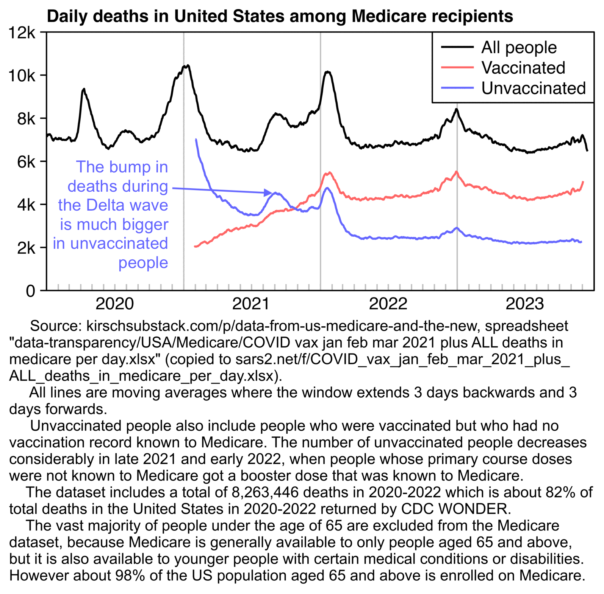
library(data.table);library(ggplot2);library(readxl)
ma=\(x,b=1,f=b){x[]=rowMeans(embed(c(rep(NA,b),x,rep(NA,f)),f+b+1),na.rm=T);x}
f="http://sars2.net/f/COVID_vax_jan_feb_mar_2021_plus_ALL_deaths_in_medicare_per_day.xlsx"
s8=setDT(read_excel(f,sheet=8))
p=s8[,.(x=as.Date(BENE_DEATH_DT),y=num_benes,z=3)]
s5=setDT(read_excel(f,sheet=5))
p=rbind(s5[,.(x=as.Date(BENE_DEATH_DT),y=NUM_BENES,z=1)],p)
p=rbind(p,dcast(p,x~z,value.var="y")[,.(x,y=`1`-`3`,z=2)])
p[,z:=factor(z,,c("All people","Vaccinated","Unvaccinated"))]
p[,y:=ma(y,3),z]
xstart=as.Date("2020-1-1");xend=as.Date("2024-1-1")
xbreak=seq(xstart+182,xend,"year")
p=p[x%in%xstart:xend]
ybreak=pretty(c(0,p$y),7)
segx=seq(xstart,xend,"month")
ggplot(p,aes(x,y,z))+
geom_vline(xintercept=seq(xstart,xend,"year"),color="gray75",linewidth=.4)+
annotate("segment",x=segx,xend=segx,y=0,yend=max(ybreak)*.025,color="gray75",linewidth=.4)+
geom_line(aes(color=z),linewidth=.6)+
labs(x=NULL,y=NULL,title="Daily deaths in United States among Medicare recipients")+
scale_x_continuous(limits=c(xstart-.5,xend+.5),breaks=xbreak,labels=year(xbreak))+
scale_y_continuous(limits=range(ybreak),breaks=ybreak,labels=\(x)ifelse(x==0,x,paste0(x/1e3,"k")))+
scale_color_manual(values=c("black","#f66","#66f"))+
coord_cartesian(clip="off",expand=F)+
theme(axis.text=element_text(size=11,color="black"),
axis.text.x=element_text(margin=margin(4)),
axis.text.y=element_text(margin=margin(,3)),
axis.ticks=element_line(linewidth=.4,color="black"),
axis.ticks.length.x=unit(0,"pt"),
axis.ticks.length.y=unit(4,"pt"),
legend.background=element_blank(),
legend.box.background=element_rect(color="black",linewidth=.4),
legend.box.spacing=unit(0,"pt"),
legend.direction="vertical",
legend.justification=c(1,1),
legend.key=element_blank(),
legend.key.height=unit(13,"pt"),
legend.key.width=unit(26,"pt"),
legend.margin=margin(3,5,3,3),
legend.position=c(1,1),
legend.spacing.x=unit(2,"pt"),
legend.spacing.y=unit(0,"pt"),
legend.text=element_text(size=11,vjust=.5),
legend.title=element_blank(),
panel.background=element_blank(),
panel.border=element_rect(fill=NA,linewidth=.4),
panel.spacing=unit(2,"pt"),
plot.margin=margin(5,5,2,5),
plot.subtitle=element_text(margin=margin(,,5)),
plot.title=element_text(size=11,face=2,margin=margin(2,,4)))
ggsave("1.png",width=5.3,height=2.8,dpi=300*4)
sub="\u00a0 Source: kirschsubstack.com/p/data-from-us-medicare-and-the-new, spreadsheet \"data-transparency/USA/Medicare/COVID vax jan feb mar 2021 plus ALL deaths in medicare per day.xlsx\" (copied to sars2.net/f/COVID_vax_jan_feb_mar_2021_plus_
ALL_deaths_in_medicare_per_day.xlsx).
All lines are moving averages where the window extends 3 days backwards and 3 days forwards.
Unvaccinated people also include people who were vaccinated but who had no vaccination record known to Medicare. The number of unvaccinated people decreases considerably in late 2021 and early 2022, when people whose primary course doses were not known to Medicare got a booster dose that was known to Medicare.
The Medicare dataset includes a total of 8,263,446 deaths in 2020-2022 which is about 82% of total deaths in the United States in 2020-2022 returned by CDC WONDER.
The vast majority of people under the age of 65 are excluded from the Medicare dataset, because Medicare is generally available to only people aged 65 and above, but it is also available to younger people with certain medical conditions or disabilities. About 98% of the US population aged 65 and above is enrolled on Medicare."
system(paste0("mogrify -trim 1.png;magick 1.png \\( -size `identify -format %w 1.png`x -font Arial -interline-spacing -3 -pointsize $[40*4] caption:'",gsub("'","'\\\\'",sub),"' -splice x80 \\) -append -resize 25% -bordercolor white -border 24 -colors 256 1.png"))
Kirsch posted this comment to me: [https://kirschsubstack.com/p/the-czech-republic-record-level-data/comment/98446416]
I think you forgot to analyze the non-Covid period After the full Covid wave was over. There you will find that the vaccinated are dying at a higher rate than the rate they were dying before. And also, you didn't analyze the second part of the Covid wave where you would find the same bad news for the vaccinated. So sure you're gonna find Whatever you're looking for if you manipulate the dates. I didn't manipulate the dates. I simply chose the Covid period When the Covid test started going up and then ended it when the Covid numbers went back to near zero.
if you then add on the second non-Covid. After that you will find That the vaccinated are now dying at a much higher rate than they were before during non-Covid periods.
But I posted this response:
You wrote: "I think you forgot to analyze the non-Covid period After the full Covid wave was over. There you will find that the vaccinated are dying at a higher rate than the rate they were dying before."
But that's because in mid-2021 there were still many recently vaccinated people who were impacted by the temporal HVE.
My ASMR for people in the Czech dataset was about 969 in May 2020. In comparison the ASMR of vaccinated people was about 606 in May 2021 but about 900 in May 2022, so both were lower than the 2020 baseline, but 2021 was about 37% lower than the baseline because vaccinated people were heavily impacted by the temporal HVE in May 2021:
> cul=\(x,y)y[cut(x,c(y,Inf),,T,F)] > ages=c(0,3:9*5,50:89,18:20*5) > t=fread("https://sars2.net/f/czbucketsdaily.csv.gz") > a=t[month(date)==5,.(pop=sum(alive),dead=sum(dead)),.(vax=dose>0,year=year(date),age=cul(age,ages))] > a=merge(a,fread("https://sars2.net/f/czcensus2021pop.csv")[,sum(pop),.(age=cul(age,ages))][,.(age,std=V1/sum(V1))]) > a[,.(asmr=round(sum(dead/pop*std*365e5))),.(year,vax)]|>print(r=F) year vax asmr # ASMR per 100,000 person-years in May of each year 2020 FALSE 969 2021 TRUE 606 2021 FALSE 2081 2022 TRUE 900 2022 FALSE 1584If you would've used the second half of 2022 as your low-COVID period then it wouldn't have been confounded as much by the temporal HVE. My code above shows the ratio between unvaccinated and vaccinated ASMR was about 3.4 in May 2021 but only about 1.8 in May 2022.
Added later: Kirsch has now also added other low-COVID periods and a narrower high-COVID period to his spreadsheet. So now in the period with the highest COVID deaths on weeks 45-52 of 2021, unvaccinated people had about 4.3 times higher mortality than vaccinated people. And in a low-COVID period on weeks 19-47 of 2022, unvaccinated people only had about 2.0 times higher mortality than vaccinated people: [https://github.com/skirsch/Czech/blob/main/analysis/vax_24_1950_CC.xlsx]
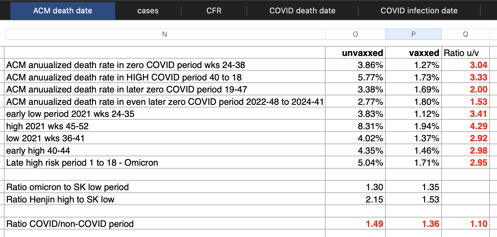
In the English ONS data, the ratio between unvaccinated and vaccinated mortality is elevated during the COVID wave that peaks in August 2021 and the wave that peaks in December 2021 to January 2022. There is a small dent in the ratio during the months in between, but it's not too big because unvaccinated people also have fairly high COVID mortality between the two peaks:


library(data.table);library(ggplot2)
t=fread("http://sars2.net/f/ons.csv")
t=rbind(t[ed==7&month<="2021-03"],t[ed==9])
t[,x:=as.Date(paste0(month,"-15"))]
t[,vax:=factor(status!="Unvaccinated",,c("Unvaccinated","Vaccinated"))]
a=t[age!="Total",.(y=sum(dead)/sum(pop)*1e5),.(age,x,vax,cause)]
a=rbind(a,t[age=="Total"&status%like%"accin",.(x,y=asmr,age="All ages",vax,cause)])
p=a[cause!="Non-COVID-19 deaths"]
p[cause=="Deaths involving COVID-19",cause:="COVID deaths"]
xstart=as.Date("2021-1-1");xend=as.Date("2023-6-1");xbreak=seq(xstart,xend,"year")
ggplot(p)+
facet_wrap(~age,dir="v",scales="free_y",ncol=2)+
geom_vline(xintercept=seq(xstart,xend,"year"),color="gray60",linewidth=.4)+
geom_rect(data=p[,max(y),age],aes(xmin=xstart,xmax=xend,ymin=0,ymax=V1),linewidth=.4,fill=NA,color="black",lineend="square")+
geom_line(aes(x,y,linetype=cause,color=vax))+
geom_text(data=p[,max(y),age],aes(x=as.Date("2022-7-1"),y=V1,label=age),hjust=.5,fontface=2,vjust=1.5,size=3.8)+
labs(x=NULL,y=NULL,title="Monthly mortality rates in English ONS data")+
scale_x_continuous(limits=c(xstart-.5,xend+.5),breaks=xbreak,labels=year(xbreak))+
scale_y_continuous(breaks=\(x){y=pretty(x,4);y[y<.85*max(x)]},labels=\(x)ifelse(x<1000,x,paste0(x/1e3,"k")))+
scale_color_manual(values=c("#66f","#f66","black"))+
scale_linetype_manual(values=c("solid","11"))+
scale_alpha_manual(values=1:0)+
coord_cartesian(clip="off",expand=F)+
guides(color=guide_legend(order=1),linetype=guide_legend(order=2))+
theme(axis.text=element_text(hjust=0,size=11,color="black"),
axis.title=element_text(size=11,face=2),
axis.text.x=element_text(margin=margin(3)),
axis.ticks=element_line(linewidth=.4,color="black"),
axis.ticks.length.x=unit(0,"pt"),
axis.ticks.length.y=unit(4,"pt"),
legend.background=element_rect(color="black",linewidth=.4),
legend.box.margin=margin(,,2),
legend.box.spacing=unit(0,"pt"),
legend.direction="horizontal",
legend.justification="right",
legend.key=element_blank(),
legend.key.height=unit(13,"pt"),
legend.key.width=unit(21,"pt"),
legend.margin=margin(3,4,3,3),
legend.position="top",
legend.spacing.x=unit(2,"pt"),
legend.spacing.y=unit(0,"pt"),
legend.text=element_text(size=11,vjust=.5),
legend.title=element_blank(),
panel.background=element_blank(),
panel.spacing=unit(2,"pt"),
plot.margin=margin(5,5,5,5),
plot.title=element_text(hjust=.5,size=11,face=2,margin=margin(2,,4)),
strip.background=element_blank(),
strip.text=element_blank())
ggsave("1.png",width=5.47,height=4.3,dpi=300*4)
sub="The values for individual age groups are crude mortality rates per 100,000 person-years, and the values for all ages are age-standardized mortality rates per 100,000 person-years. The data was taken from Tables 1 and 2 of the ONS dataset \"Deaths involving COVID-19 by vaccination status, England\". Data for the first three months of 2021 was taken from the July 2022 edition and data for other months was taken from the August 2023 edition. People are counted as vaccinated on the day of the first dose. COVID deaths are deaths where COVID was mentioned anywhere on the death certificate."
system(paste0("mogrify -trim 1.png;magick 1.png \\( -size `identify -format %w 1.png`x -font Arial -interline-spacing -3 -pointsize $[43*4] caption:'",gsub("'","'\\\\'",sub),"' -splice x80 \\) -append -resize 25% -bordercolor white -border 24 -colors 256 1.png"))
In February 2024 data for weekly COVID and non-COVID ASMR by vaccination status was published by the Dutch Centraal Bureau voor de Statistiek. It included one set of data where people were counted as vaccinated immediately after the first dose and another set where people were only counted as vaccinated two weeks after the second dose (or 4 weeks after the first dose in the case of vaccine types like J&J that only had one dose). The data can be downloaded from the CSV files under sections 3.3.1 to 3.3.8 here: https://www.cbs.nl/nl-nl/longread/rapportages/2024/covid-vaccinatiestatus-en-sterfte/3-resultaten. I compiled the files into this CSV file: f/dutch_cbs_aukema.csv.
The Dutch CBS data is similar to the Czech and English data in the sense that the ratio between unvaccinated and vaccinated ASMR was elevated during the COVID wave in the winter of 2021-2022:
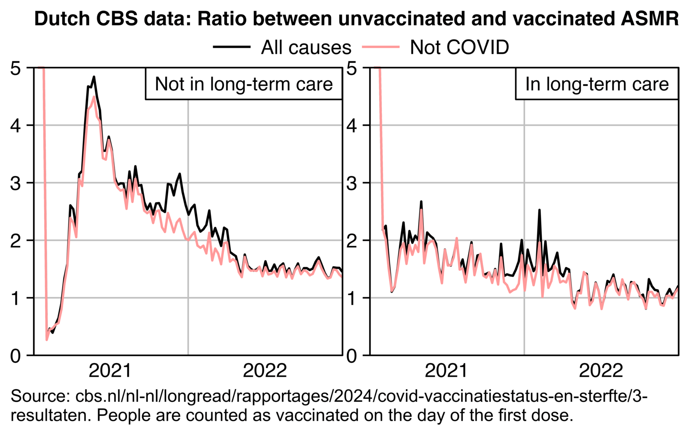
t=fread("http://sars2.net/f/dutch_cbs_aukema.csv")
a=rbind(t[,cause:="All causes"],t[covid==F][,cause:="Not COVID"])
a=a[,.(y=sum(asmr)),.(x=week_ending,status,cause,ltc=long_term_care)]
p=a[,.(y=y[status=="Unvaccinated"]/y[status=="Vaccinated"]),.(x,z=cause,ltc)]
p[,ltc:=factor(ltc,,c("Not in long-term care","In long-term care"))]
xstart=as.Date("2021-1-1");xend=as.Date("2023-1-1")
xbreak=seq(xstart+182,xend,"year")
p=p[x%in%xstart:xend]
ybreak=pretty(c(0,p$y),5)
ggplot(p,aes(x,y,z))+
facet_wrap(~ltc,dir="h",scales="free")+
geom_vline(xintercept=seq(xstart,xend,"year"),color="gray75",linewidth=.4)+
geom_hline(yintercept=ybreak,color="gray75",linewidth=.4)+
geom_line(aes(color=z),linewidth=.6)+
geom_label(data=p[rowid(ltc)==1],aes(x=xend,y=max(ybreak),label=ltc),fill="white",label.r=unit(0,"pt"),label.padding=unit(5,"pt"),label.size=.4,color="black",size=3.7,hjust=1,vjust=1)+
labs(x=NULL,y=NULL,title="Dutch CBS data: Ratio between unvaccinated and vaccinated ASMR")+
scale_x_continuous(limits=c(xstart-.5,xend+.5),breaks=xbreak,labels=year(xbreak))+
scale_y_continuous(limits=range(ybreak),breaks=ybreak)+
scale_color_manual(values=c("black","#f99"))+
coord_cartesian(clip="off",expand=F)+
theme(axis.text=element_text(size=11,color="black"),
axis.text.x=element_text(margin=margin(4)),
axis.text.y=element_text(margin=margin(,3)),
axis.ticks=element_line(linewidth=.4,color="black"),
axis.ticks.length.x=unit(0,"pt"),
axis.ticks.length.y=unit(4,"pt"),
legend.background=element_blank(),
legend.box.spacing=unit(0,"pt"),
legend.direction="horizontal",
legend.justification="center",
legend.key=element_blank(),
legend.key.height=unit(13,"pt"),
legend.key.width=unit(26,"pt"),
legend.margin=margin(,,5),
legend.position="top",
legend.spacing.x=unit(3,"pt"),
legend.spacing.y=unit(0,"pt"),
legend.text=element_text(size=11,vjust=.5),
legend.title=element_blank(),
panel.background=element_blank(),
panel.border=element_rect(fill=NA,linewidth=.4),
panel.spacing=unit(2,"pt"),
plot.margin=margin(5,5,5,5),
plot.subtitle=element_text(margin=margin(,,5)),
plot.title=element_text(size=11,face=2,margin=margin(2,,3)),
strip.background=element_blank(),
strip.text=element_blank())
ggsave("1.png",width=5.25,height=3,dpi=300*4)
system("magick 1.png -resize 25% -colors 256 1.png")
The next plot shows that in May 2021 when vaccinated people had low ASMR due to the temporal healthy vaccinee effect, the straggler effect caused unvaccinated people to have a spike in ASMR even though there was not a high number of COVID deaths. By September 2021 the temporal healthy vaccinee effect had worn out so vaccinated people now had much higher ASMR than in May 2021, and the ratio between unvaccinated and vaccinated ASMR was about 2.5. But during the COVID wave in December 2021, the ratio increased to about 3.0 because unvaccinated people had much higher COVID ASMR than vaccinated people:
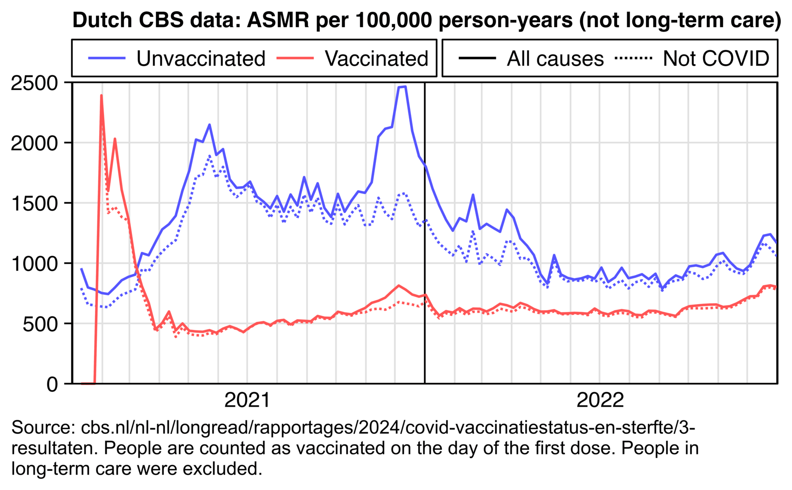
t=fread("http://sars2.net/f/dutch_cbs_aukema.csv")[,asmr:=asmr/7*365]
t=t[long_term_care==F]
a=rbind(t[,cause:="All causes"],t[covid==F][,cause:="Not COVID"])
a=a[,.(y=sum(asmr)),.(x=week_ending,status,cause)]
stat=c("Unvaccinated","Vaccinated")
p=a[status%in%stat][,status:=factor(status,stat)]
xstart=as.Date("2021-1-1");xend=as.Date("2023-1-1")
xbreak=seq(xstart+182,xend,"year")
p=p[x%in%xstart:xend]
ybreak=pretty(c(0,p$y),5)
ggplot(p,aes(x,y,z))+
geom_vline(xintercept=seq(xstart,xend,"month"),color="gray88",linewidth=.4)+
geom_hline(yintercept=ybreak,color="gray88",linewidth=.4)+
geom_vline(xintercept=seq(xstart,xend,"year"),linewidth=.4)+
geom_line(aes(color=status,linetype=cause),linewidth=.6)+
labs(x=NULL,y=NULL,title="Dutch CBS data: ASMR per 100,000 person-years (not long-term care)")+
scale_x_continuous(limits=c(xstart-.5,xend+.5),breaks=xbreak,labels=year(xbreak))+
scale_y_continuous(limits=range(ybreak),breaks=ybreak)+
scale_color_manual(values=c("#55f","#f55"))+
scale_linetype_manual(values=c("solid","11"))+
coord_cartesian(clip="off",expand=F)+
guides(color=guide_legend(order=1),linetype=guide_legend(order=2))+
theme(axis.text=element_text(size=11,color="black"),
axis.text.x=element_text(margin=margin(4)),
axis.text.y=element_text(margin=margin(,3)),
axis.ticks=element_line(linewidth=.4,color="black"),
axis.ticks.length.x=unit(0,"pt"),
axis.ticks.length.y=unit(4,"pt"),
legend.background=element_rect(color="black",linewidth=.4),
legend.box.margin=margin(,,3),
legend.box.spacing=unit(0,"pt"),
legend.direction="horizontal",
legend.justification="center",
legend.key=element_blank(),
legend.key.height=unit(13,"pt"),
legend.key.width=unit(24,"pt"),
legend.margin=margin(3,4,3,3),
legend.position="top",
legend.spacing.x=unit(3,"pt"),
legend.spacing.y=unit(0,"pt"),
legend.text=element_text(size=11,vjust=.5),
legend.title=element_blank(),
panel.background=element_blank(),
panel.border=element_rect(fill=NA,linewidth=.4),
panel.spacing=unit(2,"pt"),
plot.margin=margin(5,5,5,5),
plot.subtitle=element_text(margin=margin(,,5)),
plot.title=element_text(size=11,face=2,margin=margin(1,,4)))
ggsave("1.png",width=5.6,height=3,dpi=300*4)
sub="Source: cbs.nl/nl-nl/longread/rapportages/2024/covid-vaccinatiestatus-en-sterfte/3-
resultaten. People are counted as vaccinated on the day of the first dose. People insured for long-term care were excluded."
system(paste0("mogrify -trim 1.png;magick 1.png \\( -size `identify -format %w 1.png`x -font Arial -interline-spacing -3 -pointsize $[40*4] caption:'",gsub("'","'\\\\'",sub),"' -splice x80 \\) -append -resize 25% -bordercolor white -border 24 -colors 256 1.png"))
There are two main Czech record-level datasets that have been analyzed by Kirsch. The old dataset released in March 2024 contained one row for each person. The new dataset released in November 2024 contains one row for people with zero or one cases but multiple rows for people with multiple cases, and it also contains information about each COVID case, including hospitalizations and whether the case resulted in a death. Kirsch's analysis I'm writing about here was based on the new dataset.
The new dataset starts on week 10 of 2020, when the first sheet of Kirsch's spreadsheet shows that there were 672,845 people alive at the start of the week and 75 people who died, so there were 672,770 people alive at the end of the week: [https://github.com/skirsch/Czech/blob/ba4ac6038022fcc50542958dada041a07cbd1fd2/analysis/vax_24_1950.xlsx]
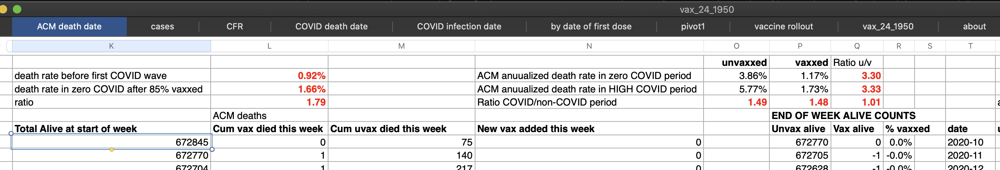
Kirsch included only people born between 1950 and 1954 in his analysis. The new dataset has 672,876 rows where the year of birth is between 1950 and 1954, which is 31 more than Kirsch's number of people alive at the start of the first week. I don't know what explains the difference. However the rows include 13,457 rows for second cases and 666 rows for third cases, so Kirsch should've subtracted them from his number of people alive:
system("wget https://data.mzcr.cz/data/distribuce/402/Otevrena-data-NR-26-30-COVID-19-prehled-populace-2024-01.csv")
nzip=fread("Otevrena-data-NR-26-30-COVID-19-prehled-populace-2024-01.csv")
nzip[RokNarozeni=="1950-1954",.N,Infekce]
# Infekce N
# 1: NA 482237 # people with no case listed
# 2: 1 176516 # people with 1 or more cases listed
# 3: 2 13457 # people with 2 or more cases listed
# 4: 3 666 # people with 3 cases listed (or possibly 3 or more cases since case numbers only go up to 3)
People born in 1950-1954 were 70-74 years old on December 31st 2020, but the Czech resident population estimate for ages 70-74 on December 31st 2020 is 619,783. [czech.html#Deaths_and_population_estimates_by_single_year_of_age_from_Eurostat] In the 2021 census on March 27th 2021, the population estimate of ages 70-74 was 618,629. [https://vdb.czso.cz/vdbvo2/faces/en/index.jsf?page=vystup-objekt&z=T&f=TABULKA&skupId=4449&katalog=33517&pvo=SLD21022-VSE&pvo=SLD21022-VSE&str=v335] But even 672876-13457-666 is 658,753 which is much higher than the resident population estimates.
The old record-level dataset has 678,999 people with a date of birth between 1950 and 1954, out of whom 13,419 have a date of death in 2020, which gives a population size of 665,580 at the start of 2021: [https://github.com/PalackyUniversity/uzis-data-analysis/tree/main/data]
system("wget https://github.com/skirsch/Czech/raw/refs/heads/main/data/CR_records.csv.xz")
rec=fread("CR_records.csv.xz")
rec[Rok_narozeni%in%1950:1954][,.(total=.N,died2020=sum(year(DatumUmrti)==2020,na.rm=T))]
# total died2020
# 1: 678999 13419
So I don't know why the number of people in the record-level datasets is much higher than the resident population estimates.
By week 52 of 2021, Kirsch's spreadsheet has a population size of 651,074 people out of whom 81,470 are unvaccinated, so the percentage of unvaccinated people is about 12.5%. When I excluded rows for second and third cases, I got only 637,025 people who had not died by the end of week 52 of 2021 out of whom only 79,116 were unvaccinated, but because both the numerator and denominator were now smaller, the percentage of unvaccinated people was 12.4% so it was still similar to Kirsch's spreadsheet:
nzip2=nzip[RokNarozeni=="1950-1954"][is.na(Infekce)|Infekce==1][DatumUmrtiLPZ==""|DatumUmrtiLPZ>"2021-52"] nzip2[,.(total=.N,unaccinated=sum(Datum_Prvni_davka==""|Datum_Prvni_davka>"2021-52"))] # total unaccinated # 1: 637025 79116
However the difference between the new and old record-level datasets is bigger, because on December 30th 2021 which is the middle day of week 52 of 2021, the old record-level dataset has 649,506 people alive out of whom 91,458 had no vaccine dose listed, so the percentage of unvaccinated people is about 14.1%:
rec=fread("CR_records.csv")
d1=as.Date("2021-12-30")
sub=rec[Rok_narozeni%in%1950:1954]
sub[!(!is.na(DatumUmrti)&DatumUmrti<=d1),.(total=.N,unvaccinated=sum(!(!is.na(Datum_1)&Datum_1<=d1)))]
# total unvaccinated
# 1: 649506 91458
This plot also shows that Kirsch's error makes almost no difference in the ratio between unvaccinated and vaccinated mortality rate:
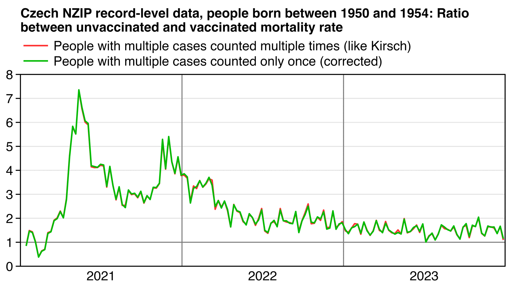
library(data.table);library(ggplot2)
nzip=fread("Otevrena-data-NR-26-30-COVID-19-prehled-populace-2024-01.csv")
t=nzip[RokNarozeni=="1950-1954"]
t=t[!(Datum_Prvni_davka!=""&DatumUmrtiLPZ!=""&Datum_Prvni_davka>DatumUmrtiLPZ)]
t[,vax:=Datum_Prvni_davka!=""&Datum_Prvni_davka<=DatumUmrtiLPZ]
weeks=data.table(date=seq(as.Date("2019-1-1"),as.Date("2024-12-31"),1))
weeks=weeks[,week:=format(date,"%G-%V")][rowid(week)==4]
setkey(weeks,"week")
t=rbind(t[,type:=1],t[!(!is.na(Infekce)&Infekce>1)][,type:=2])
died=t[,.(vaxdead=sum(vax),unvaxdead=sum(!vax)),.(week=weeks[DatumUmrtiLPZ,date],type)]
vax=t[,.(newvax=.N),.(week=weeks[Datum_Prvni_davka,date],type)]
a=merge(died,vax,all=T)[!is.na(week)][is.na(newvax),newvax:=0]
a[,unvaxpop:=t[,.N,type]$N[type]-cumsum(unvaxdead)-cumsum(newvax),type]
a[,vaxpop:=cumsum(newvax)-cumsum(vaxdead),type]
p=a[,.(x=week,type,y=(unvaxdead/unvaxpop)/(vaxdead/vaxpop))][y!=Inf]
ybreak=pretty(p$y,7)
xstart=as.Date("2021-1-1");xend=as.Date("2024-1-1");xbreak=seq(xstart+182,xend,"year")
p[,type:=factor(type,,c("People with multiple cases counted multiple times (like Kirsch)","People with multiple cases counted only once (corrected)"))]
ggplot(p,aes(x,y))+
geom_hline(yintercept=ybreak,color=ifelse(ybreak==1,"gray50","gray90"),linewidth=.4)+
geom_vline(xintercept=seq(xstart,xend,"year"),linewidth=.4,color="gray50",lineend="square")+
geom_line(aes(color=type),linewidth=.6)+
labs(x=NULL,y=NULL,title="Czech NZIP record-level data, people born between 1950 and 1954: Ratio\nbetween unvaccinated and vaccinated mortality rate")+
scale_x_continuous(limits=c(xstart,xend),breaks=xbreak,labels=year(xbreak))+
scale_y_continuous(breaks=ybreak)+
scale_color_manual(values=c("#f33","#0b0"))+
coord_cartesian(clip="off",expand=F)+
theme(axis.text=element_text(size=11,color="black"),
axis.ticks=element_line(color="black",linewidth=.4),
axis.text.x=element_text(margin=margin(4)),
axis.ticks.length.x=unit(0,"pt"),
axis.ticks.length.y=unit(4,"pt"),
legend.background=element_blank(),
legend.box.spacing=unit(0,"pt"),
legend.direction="vertical",
legend.justification="left",
legend.key=element_blank(),
legend.key.height=unit(13,"pt"),
legend.key.width=unit(26,"pt"),
legend.margin=margin(,,5),
legend.position="top",
legend.spacing.x=unit(2,"pt"),
legend.spacing.y=unit(0,"pt"),
legend.text=element_text(size=11),
legend.title=element_blank(),
panel.background=element_blank(),
panel.border=element_rect(fill=NA,linewidth=.4),
panel.grid=element_blank(),
panel.spacing=unit(3,"pt"),
plot.margin=margin(5,5,5,5),
plot.title=element_text(size=11,face="bold",margin=margin(2,,3)))
ggsave("1.png",width=6,height=3.4,dpi=300*4)
system("magick 1.png -resize 25% -colors 256 1.png")
In the plot above the maximum ratio is about 7.7, but in my earlier plot which showed the ratio between unvaccinated and vaccinated ASMR in the old record-level dataset, the maximum ratio was only about 3.7. When I changed my earlier code to include only people between the ages of 70 and 74, the maximum ratio increased to about 5.0, so the ratio seems to be higher in ages 70-74 than in all ages. There still remained a fairly large difference compared to the new record-level dataset, but it might be because the old dataset had a higher percentage of unvaccinated people in ages 70-74.
Kirsch's spreadsheet had this sheet where the cumulative CFR went up after the vaccine rollout: [https://github.com/skirsch/Czech/blob/ba4ac6038022fcc50542958dada041a07cbd1fd2/analysis/vax_24_1950.xlsx]
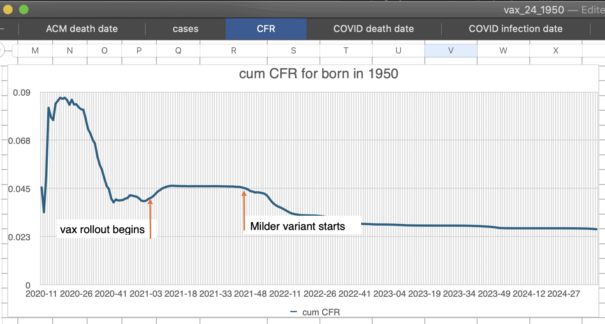
But when I changed it to non-cumulative CFR instead, the CFR went down after the vaccine rollout:
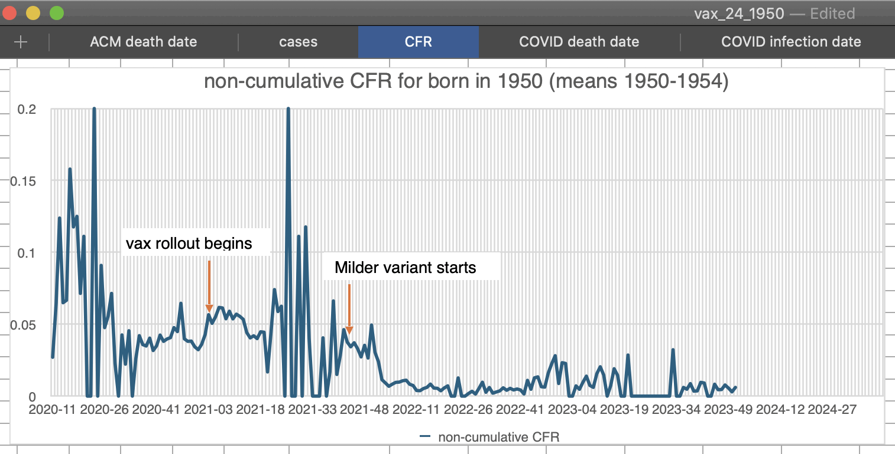
I think non-cumulative CFR is the proper measurement to use if you are trying to determine whether CFR went up or down in the months after the vaccine rollout. But maybe Kirsch plotted cumulative CFR instead because non-cumulative CFR didn't give him the result he wanted to see.
Also if Kirsch would've plotted CFR by vaccination status, he would've seen that over the course of 2021 the CFR went down in vaccinated people, but the CFR remained around the same level on average in unvaccinated people (even though it's probably partially because of the HVE): [czech4.html#Case_fatality_ratio_in_new_UZIS_data]
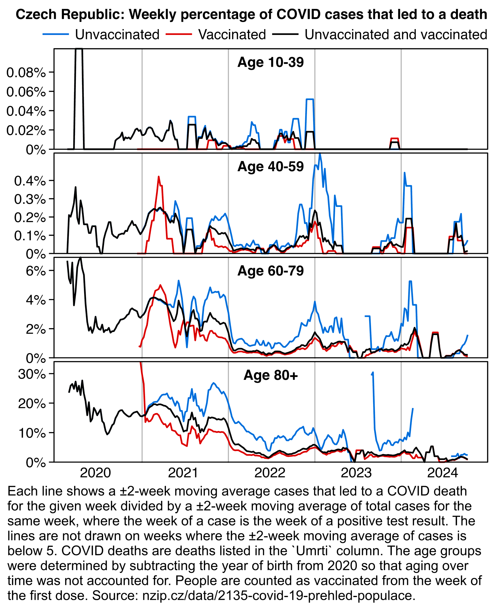
This plot shows that after early 2021 vaccinated and unvaccinated people have a similar rate of cases per capita: [https://github.com/skirsch/Czech/blob/ba4ac6038022fcc50542958dada041a07cbd1fd2/analysis/vax_24_1950.xlsx]
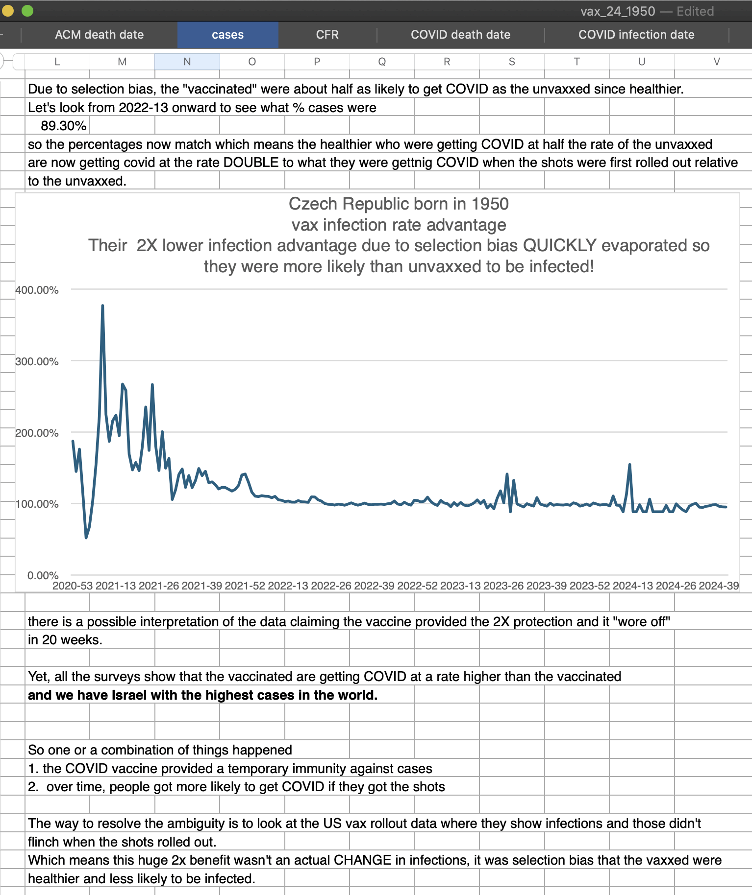
At first I thought the plot showed unvaccinated cases per capita divided by vaccinated cases per capita. But actually it shows the percentage of vaccinated people divided by the percentage of cases that were in vaccinated people, which is kind of a weird measure. So if for example 90% of people were vaccinated and 75% of cases were in vaccinated people, the ratio in the plot above would be 1.8, even though actually the number of cases per capita was 3 times higher in unvaccinated people than vaccinated people (from (25/10)/(75/90)).
When I changed the plot to show cases per capita in unvaccinated people divided by cases per capita in vaccinated people, the ratio became even higher in 2021:
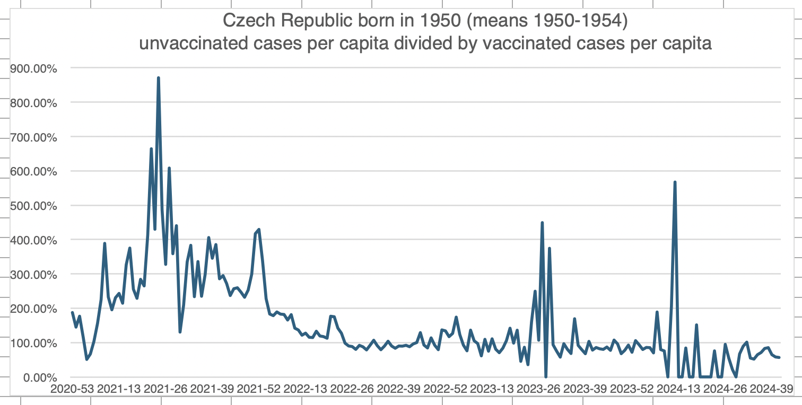
Kirsch wrote "Due to selection bias, the 'vaccinated' were about half as likely to get COVID as the unvaxxed since healthier." But I don't know if that's true, or if HVE would account for a two-fold difference in the risk of getting COVID. Kirsch seems to assume that vaccination has no effect on the risk of being infected with COVID, which might cause him to overestimate the effect of HVE on the number of cases. And he also didn't consider that vaccinated people are probably more likely to get tested than unvaccinated people, which might rather cause the rate of cases per capita to be underestimated in unvaccinated people relative to vaccinated people.
In this analysis Kirsch again made the error where he counted people with multiple cases multiple times. Now it had a much bigger impact on the results than in his other analysis for CFR, but correcting the error made the results look more favorable to unvaccinated people because it reduced the ratio of unvaccinated to vaccinated cases:
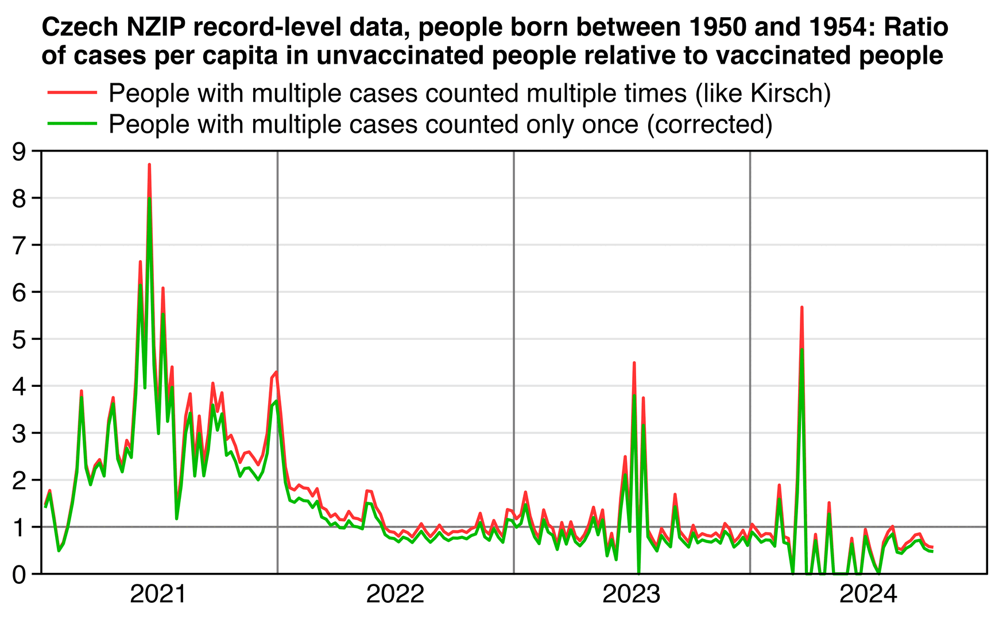
library(data.table);library(ggplot2)
nzip=fread("Otevrena-data-NR-26-30-COVID-19-prehled-populace-2024-01.csv.gz")
t=nzip[RokNarozeni=="1950-1954"]
weeks=data.table(date=seq(as.Date("2019-1-1"),as.Date("2024-12-31"),1))
weeks=weeks[,week:=format(date,"%G-%V")][rowid(week)==4,setNames(date,week)]
t[,`:=`(dead=weeks[DatumUmrtiLPZ],vax=weeks[Datum_Prvni_davka],case=weeks[DatumPozitivity])]
t[,vaxdead:=!is.na(vax)&vax<=dead][,vaxcase:=!is.na(vax)&vax<=case]
d=rbind(cbind(t,type=1),t[,type:=2][!is.na(Infekce)&Infekce>1,`:=`(dead=NA,vax=NA)])
cases=d[,.(vaxcase=sum(vaxcase),unvaxcase=sum(!vaxcase)),.(week=case,type)]
dead=d[,.(vaxdead=sum(vaxdead),unvaxdead=sum(!vaxdead)),.(week=dead,type)]
vax=d[,.(newvax=.N),.(week=vax,type)]
a=merge(dead,merge(cases,vax,all=T),all=T)[!is.na(week)]
a[is.na(a)]=0
a[,unvaxpop:=d[,.N,type]$N[type]-cumsum(unvaxdead)-cumsum(newvax),type]
a[,vaxpop:=cumsum(newvax)-cumsum(vaxdead),type]
p=a[,.(x=week,y=(unvaxcase/unvaxpop)/(vaxcase/vaxpop)),type][y!=Inf]
ybreak=pretty(p$y,8)
xstart=as.Date("2021-1-1");xend=as.Date("2025-1-1");xbreak=seq(xstart+182,xend,"year")
p[,type:=factor(type,,c("People with multiple cases counted multiple times (like Kirsch)","People with multiple cases counted only once (corrected)"))]
ggplot(p,aes(x,y))+
geom_hline(yintercept=ybreak,color=ifelse(ybreak==1,"gray50","gray90"),linewidth=.4)+
geom_vline(xintercept=seq(xstart,xend,"year"),linewidth=.4,color="gray50",lineend="square")+
geom_line(aes(color=factor(type)),linewidth=.6)+
labs(x=NULL,y=NULL,title="Czech NZIP record-level data, people born between 1950 and 1954: Ratio\nof cases per capita in unvaccinated people relative to vaccinated\npeople")+
scale_x_continuous(limits=c(xstart,xend),breaks=xbreak,labels=year(xbreak))+
scale_y_continuous(breaks=ybreak)+
scale_color_manual(values=c("#f33","#0b0"))+
coord_cartesian(clip="off",expand=F)+
theme(axis.text=element_text(size=11,color="black"),
axis.ticks=element_line(color="black",linewidth=.4),
axis.text.x=element_text(margin=margin(4)),
axis.ticks.length.x=unit(0,"pt"),
axis.ticks.length.y=unit(4,"pt"),
legend.background=element_blank(),
legend.box.spacing=unit(0,"pt"),
legend.direction="vertical",
legend.justification="left",
legend.key=element_blank(),
legend.key.height=unit(13,"pt"),
legend.key.width=unit(26,"pt"),
legend.margin=margin(,,5),
legend.position="top",
legend.spacing.x=unit(2,"pt"),
legend.spacing.y=unit(0,"pt"),
legend.text=element_text(size=11),
legend.title=element_blank(),
panel.background=element_blank(),
panel.border=element_rect(fill=NA,linewidth=.4),
panel.grid=element_blank(),
panel.spacing=unit(3,"pt"),
plot.margin=margin(5,5,5,5),
plot.title=element_text(size=11,face="bold",margin=margin(2,,3)))
ggsave("1.png",width=5.8,height=3.6,dpi=300*4)
system("magick 1.png -resize 25% -colors 256 1.png")
But anyway the plots above show that in 2021 when vaccines had the biggest impact on COVID risk, the number of cases per capita was much higher in unvaccinated people than vaccinated people. So if vaccines reduce both cases and deaths, then CFR isn't necessarily a great measure of vaccine efficacy contrary to what Kirsch has suggested.
Later on many unvaccinated people had acquired natural immunity, so from the plot below you can see that by October 2022 the age-standardized COVID hospitalization rate was only about 1.8 times higher in unvaccinated people than vaccinated people, and by December 2023 it was only about 1.5 times higher: [czech3.html#Age-standardized_hospitalization_rate_by_vaccination_status]

Hospitalizations are probably less sensitive to healthcare-seeking behavior than cases, so they are probably less affected by a bias where unvaccinated people have lower healthcare-seeking behavior than vaccinated people.
Earlier I used a method to estimate lives saved by vaccines in the English ONS data and US CDC data, where for each combination of time period and age group, I multiplied the population size of vaccinated people with the COVID mortality rate of unvaccinated people and then I subtracted vaccinated COVID deaths.
When I now tried to apply the same method to the newer Czech record-level dataset that was published in November 2024, I got a total of 41,024 lives saved. It's the equivalent of about 1.3 million lives in the US population if it's simply multiplied with the ratio of US and Czech mid-2021 resident population estimates (332048977/10505772):
# from https://www.nzip.cz/data/2135-covid-19-prehled-populace
f="https://data.mzcr.cz/data/distribuce/402/Otevrena-data-NR-26-30-COVID-19-prehled-populace-2024-01.csv"
download.file(f,sub(".*/","",f))
library(data.table)
t=fread("Otevrena-data-NR-26-30-COVID-19-prehled-populace-2024-01.csv")
# rename columns
n=c(RokNarozeni="age",Datum_Prvni_davka="vax",DatumUmrtiLPZ="dead",Umrti="coviddead")
setnames(t,names(n),n)
# exclude people with a year of birth missing
# there are many superfluous rows with almost all fields including the year of birth missing
t=t[age!="-"]
# exclude a few rows with an implausibly early year of birth
t=t[!age%like%"^18|190|1910"]
# exclude duplicate rows for people with two or more cases
# this might also exclude people with a date of COVID death listed for the 2nd case but not the 1st case
# there's no way to tell which rows belong to the same person
# so I don't know if a death after a 2nd case is also listed under the 1st case or only the 2nd case
t=t[!(!is.na(Infekce)&Infekce>1)]
# get all-cause deaths and COVID deaths for each combination of week, age, and vaccination status
dead=t[,.(vaxdead=sum(vax!=""),unvaxdead=sum(vax=="")),.(week=dead,age)]
coviddead=t[,.(vaxcoviddead=sum(vax!=""),unvaxcoviddead=sum(vax=="")),.(week=coviddead,age)]
# get number of new vaccinated people each week to calculate vaccinated population size
vax=t[,.(newvax=.N),.(week=vax,age)]
# merge dataframes and add rows filled with zeroes for missing combinations of variables
a=merge(dead,merge(coviddead,vax,all=T),all=T)[!is.na(week)]
a[is.na(a)]=0
a=rbind(a,cbind(expand.grid(lapply(a[,1:2],unique)),a[1,-(1:2)][,1:5:=0][]))
a=a[rowid(week,age)==1][order(age,week)]
a=merge(a,t[,.(startpop=.N),age])[week!=""]
# calculate vaccinated and unvaccinated population sizes for each combination of week and age group
a[,unvaxpop:=startpop-cumsum(unvaxdead)-cumsum(newvax),age]
a[,vaxpop:=cumsum(newvax)-cumsum(vaxdead),age]
# get expected vaccinated COVID deaths at unvaccinated mortality rates
o=a[,year:=as.integer(substr(week,1,4))][]
o=o[,.(dead=sum(vaxcoviddead),expected=sum(unvaxcoviddead/unvaxpop*vaxpop,na.rm=T)),year]
o[,livessaved:=expected-dead]
print(round(o),r=F)
# year dead expected livessaved
# 2020 57 1 -56
# 2021 4185 29066 24881
# 2022 3121 17561 14440
# 2023 865 2428 1563
# 2024 201 397 196
Because each week has a different baseline in my method, my method takes into account that unvaccinated people acquire natural immunity over time and different variants have different lethality. But my method doesn't take into account that unvaccinated people might be more likely to die of COVID due to HVE.
In the newer Czech record-level dataset from November 2024, the Umrti column shows the week of COVID death and the DatumUmrtiLPZ shows the week of death from all causes. I don't know how COVID deaths are defined in the dataset. But the next plot shows that COVID deaths seem to be undercounted in unvaccinated people, because even though I excluded COVID deaths from the blue dotted line, unvaccinated people still have a fairly big increase in ASMR during the COVID wave in November to December 2021:
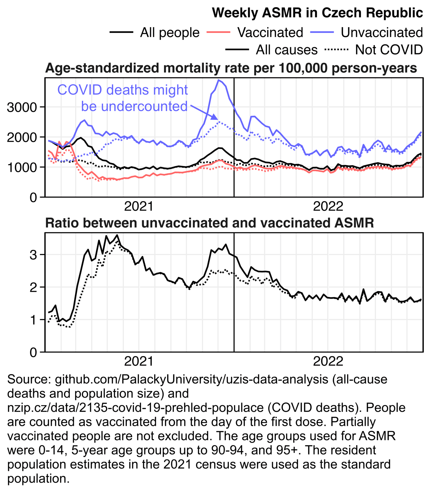
library(data.table);library(ggplot2)
ages=c(0,3:19*5)
cul=\(x,y)y[cut(x,c(y,Inf),,T,F)]
nzip=fread("Otevrena-data-NR-26-30-COVID-19-prehled-populace-2024-01.csv.gz")
nzip=nzip[!(Umrti!=""&Datum_Prvni_davka>Umrti)]
covid=nzip[Umrti!=""&RokNarozeni!="-",.N,.(Umrti,RokNarozeni,vax=Datum_Prvni_davka!=""&Datum_Prvni_davka<=Umrti)]
covid=covid[,.(coviddead=sum(N)),.(dose=ifelse(vax,2,3),age=cul(2020-as.integer(substr(RokNarozeni,1,4)),ages),week=Umrti)]
t=fread("http://sars2.net/f/czbucketsdaily.csv")
a=t[,.(dead=sum(dead),pop=sum(alive)),.(dose=ifelse(dose==0,3,2),week=format(date,"%G-%V"),age=cul(age,ages))]
a=merge(a,covid,all=T)[week%like%"202[012]"]
a[is.na(a)]=0
a=rbind(a,a[,.(dose=1,dead=sum(dead),pop=sum(pop),coviddead=sum(coviddead)),.(age,week)])
a=merge(fread("http://sars2.net/f/czcensus2021pop.csv")[,std:=pop/sum(pop)][,.(std=sum(std)),.(age=cul(age,ages))],a)
p=a[,.(dead=sum(dead/pop*std*365e5),coviddead=sum(coviddead/pop*std*365e5)),.(week,dose)]
iso=data.table(date=as.Date("2019-1-1")+(0:2e3))[,week:=format(date,"%G-%V")]
iso=iso[rowid(week)==4,setNames(date,week)]
p=p[,.(x=iso[week],dose,y=c(dead,dead-coviddead),type=rep(1:2,each=.N))]
p[,type:=factor(type,,c("All causes","Not COVID"))]
p[,dose:=factor(dose,,c("All people","Vaccinated","Unvaccinated"))]
p$facet=1
p=rbind(p,dcast(p,x+type~dose,value.var="y")[,.(x,type,y=Unvaccinated/Vaccinated,dose="All people",facet=2)])
p[,facet:=factor(facet,,c("Age-standardized mortality rate per 100,000 person-years","Ratio between unvaccinated and vaccinated ASMR"))]
p=p[x>="2021-1-7"]
xstart=as.Date("2021-1-1");xend=as.Date("2023-1-1")
xbreak=seq(xstart+182,xend,"year")
p=p[x%in%xstart:xend]
ybreak=pretty(c(0,p$y),7)
ggplot(p)+
facet_wrap(~facet,dir="v",scales="free")+
geom_vline(xintercept=seq(xstart,xend,"month"),color="gray92",linewidth=.4)+
geom_vline(xintercept=seq(xstart,xend,"year"),color="black",linewidth=.4)+
geom_line(aes(x,y,color=dose,linetype=type),linewidth=.6)+
labs(x=NULL,y=NULL,title="Weekly ASMR in Czech Republic")+
scale_x_continuous(limits=c(xstart-.5,xend+.5),breaks=xbreak,labels=year(xbreak))+
scale_y_continuous(limits=\(x)c(0,max(x)*1.02),breaks=\(x)pretty(x,4))+
scale_color_manual(values=c("black","#f66","#66f"))+
scale_fill_manual(values=c("#7c7","#faa"))+
scale_linetype_manual(values=c("solid","11"))+
coord_cartesian(clip="off",expand=F)+
guides(fill=guide_legend(keyheight=unit(1,"pt"),order=2),color=guide_legend(order=1))+
theme(axis.text=element_text(size=11,color="black"),
axis.text.x=element_text(margin=margin(3)),
axis.ticks=element_line(linewidth=.4,color="black"),
axis.ticks.length.x=unit(0,"pt"),
axis.ticks.length.y=unit(4,"pt"),
legend.box.background=element_blank(),
legend.box.margin=margin(,,3),
legend.box.spacing=unit(0,"pt"),
legend.box="vertical",
legend.box.just="right",
legend.direction="horizontal",
legend.justification="right",
legend.key=element_blank(),
legend.key.height=unit(13,"pt"),
legend.key.width=unit(24,"pt"),
legend.margin=margin(),
legend.position="top",
legend.spacing.x=unit(3,"pt"),
legend.spacing.y=unit(1,"pt"),
legend.text=element_text(size=11,vjust=.5),
legend.title=element_blank(),
panel.background=element_blank(),
panel.border=element_rect(fill=NA,linewidth=.4),
panel.grid.major.y=element_line(linewidth=.4,color="gray92"),
panel.spacing=unit(2,"pt"),
plot.margin=margin(5,5,5,5),
plot.title=element_text(hjust=1,size=11,face=2,margin=margin(2,,3)),
strip.background=element_blank(),
strip.text=element_text(margin=margin(,,3),size=11,hjust=0,face=2))
ggsave("1.png",width=4.8,height=4.2,dpi=300*4)
sub="Source: github.com/PalackyUniversity/uzis-data-analysis (all-cause deaths and population size) and nzip.cz/data/2135-covid-19-prehled-populace (COVID deaths). People are counted as vaccinated from the day of the first dose. Partially vaccinated people are not excluded. The age groups used for ASMR were 0-14, and 5-year age groups up to 90-94, and 95+. The resident population estimates in the 2021 census were used as the standard population."
system(paste0("mogrify -trim 1.png;magick 1.png \\( -size `identify -format %w 1.png`x -font Arial -interline-spacing -3 -pointsize $[43*4] caption:'",gsub("'","'\\\\'",sub),"' -splice x80 \\) -append -resize 25% -bordercolor white -border 24 -dither none -colors 256 1.png"))
So in my earlier calculation where I estimated lives saved by vaccines comparing the COVID mortality rates in vaccinated and unvaccinated people, I might have actually underestimated the lives saved if the number of COVID deaths in unvaccinated people too low in my source dataset. So next I tried estimating the lives saved based on all-cause mortality instead, except I only looked at the period between week 41 of 2021 and week 18 of 2022 when there was a relatively high number of COVID deaths. I used weeks 24 to 40 of 2021 and weeks 19 to 52 of 2022 as my low-COVID reference periods.
I calculated the baseline for each age group by fitting a spline against the ratio of unvaccinated to vaccinated CMR during the low-COVID periods. And then for each week in my high-COVID period, I calculated the ratio between the actual unvaccinated to vaccinated CMR divided with the spline baseline ratio, I divided unvaccinated deaths by the ratio to get the expected deaths in unvaccinated people, and I subtracted the total expected deaths during the high-COVID period from the total actual deaths to get the total extra deaths in unvaccinated people:
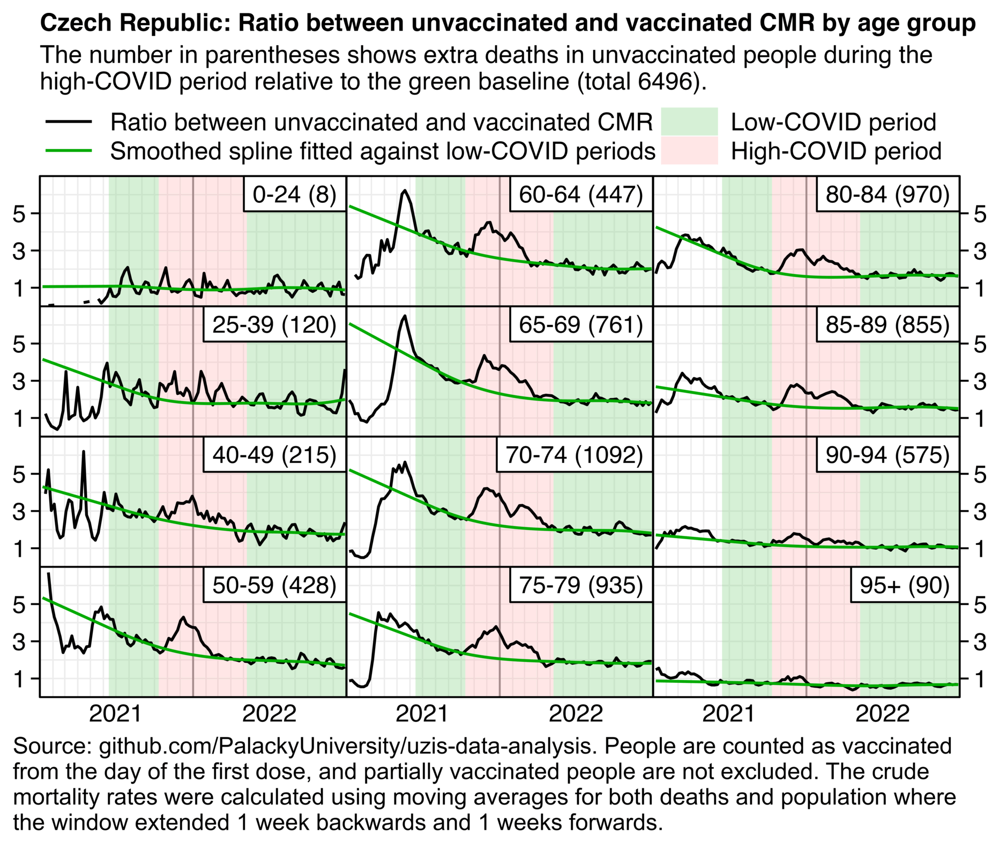
library(data.table);library(ggplot2)
iso=data.table(date=as.Date("2019-1-1")+0:2e3)[,week:=format(date,"%G-%V")][rowid(week)==4,setNames(date,week)]
ages=c(0,25,40,50,seq(60,95,5))
agecut=\(x,y)cut(x,c(y,Inf),paste0(y,c(paste0("-",y[-1]-1),"+")),T,F)
t=fread("http://sars2.net/f/czbucketsdaily.csv.gz")
a=t[,.(dead=sum(dead),pop=sum(alive)),,.(age=agecut(age,ages),dose=pmin(dose,1),week=format(date,"%G-%V"))]
a=a[,.(dead=ma(dead,1),pop=ma(pop,1),week),.(dose,age)]
p=a[,.(y=(dead/pop)[dose==0]/(dead/pop)[dose==1]),.(x=iso[week],age)][y==Inf,y:=NA]
fit1=iso[a[week>="2021-24"&week<="2021-40",unique(week)]]
fit2=iso[a[week>="2022-19",unique(week)]]
fit=p[x%in%c(fit1,fit2)][,predict(smooth.spline(x,y,spar=.9),as.integer(unique(p$x))),age]
p=rbind(p[,type:=1],fit[,.(x=`class<-`(x,"Date"),y,age,type=2)])
p[,type:=factor(type,,c("Ratio between unvaccinated and vaccinated CMR","Smoothed spline fitted against low-COVID periods"))]
yend=7;xstart=as.Date("2021-1-1");xend=as.Date("2023-1-1");xbreak=seq(xstart+182,xend,"year");p=p[x%in%xstart:xend]
hl=data.table(start=c(min(fit1)-3,min(fit2)-3,max(fit1)+4),end=c(max(fit1)+4,xend,min(fit2)-3))
hl[,label:=factor(c(1,1,2),,c("Low-COVID period","High-COVID period"))]
saved=dcast(p,x+age~as.integer(type),value.var="y")[x%in%iso["2021-41"]:iso["2022-18"]]
saved=merge(saved,a[dose==0,.(dead=sum(dead)),.(x=iso[week],age)])
saved=saved[,.(sum(dead-dead/(`1`/`2`))),age]$V1
levels(p$age)=paste0(levels(p$age)," (",round(saved),")")
ggplot(p)+
facet_wrap(~age,dir="v",ncol=3)+
geom_vline(xintercept=seq(xstart,xend,"month"),color="gray92",linewidth=.3)+
geom_hline(yintercept=1:9,color="gray92",linewidth=.3)+
geom_vline(xintercept=seq(xstart,xend,"year"),color="gray50",linewidth=.4)+
geom_rect(data=hl,aes(xmin=start,xmax=end,fill=label),ymin=0,ymax=Inf,alpha=.3,linewidth=.15)+
geom_line(aes(x,y,color=type),linewidth=.6)+
geom_label(data=p[rowid(age)==1],aes(label=age),x=xend,y=yend,fill="white",label.r=unit(0,"pt"),label.padding=unit(4,"pt"),label.size=.4,size=3.8,hjust=1,vjust=1)+
labs(x=NULL,y=NULL,title="Czech Republic: Ratio between unvaccinated and vaccinated CMR by age group",subtitle=paste0("The number in parentheses shows extra deaths in unvaccinated people during the high-COVID period relative to the green baseline (total ",round(sum(saved)),").")|>stringr::str_wrap(80))+
scale_x_continuous(limits=c(xstart-.5,xend+.5),breaks=xbreak,labels=year(xbreak))+
scale_y_continuous(limits=c(0,yend),breaks=seq(1,6,2),sec.axis=dup_axis())+
scale_color_manual(values=c("black","#0a0"))+
scale_fill_manual(values=c("#7c7","#faa"))+
coord_cartesian(clip="off",expand=F)+
guides(fill=guide_legend(order=2),color=guide_legend(order=1))+
theme(axis.text=element_text(size=11,color="black"),
axis.text.x=element_text(margin=margin(3)),
axis.ticks=element_line(linewidth=.4,color="black"),
axis.ticks.length.x=unit(0,"pt"),
axis.ticks.length.y=unit(4,"pt"),
legend.background=element_blank(),
legend.box.just="top",
legend.box.spacing=unit(0,"pt"),
legend.direction="vertical",
legend.justification="left",
legend.key=element_blank(),
legend.key.height=unit(13,"pt"),
legend.key.width=unit(26,"pt"),
legend.margin=margin(,,5),
legend.position="top",
legend.spacing=unit(2,"pt"),
legend.text=element_text(size=11,vjust=.5),
legend.title=element_blank(),
panel.background=element_blank(),
panel.border=element_rect(fill=NA,linewidth=.4),
panel.spacing=unit(0,"pt"),
plot.margin=margin(5,5,5,5),
plot.subtitle=element_text(margin=margin()),
plot.title=element_text(hjust=0,size=11,face=2,margin=margin(2,,4)),
strip.background=element_blank(),
strip.text=element_blank())
ggsave("1.png",width=6.2,height=4.6,dpi=300*4)
sub="Source: github.com/PalackyUniversity/uzis-data-analysis. People are counted as vaccinated from the day of the first dose, and partially vaccinated people are not excluded. The crude mortality rates were calculated using moving averages for both deaths and population where the window extended 1 week backwards and 1 weeks forwards."
system(paste0("mogrify -trim 1.png;magick 1.png \\( -size `identify -format %w 1.png`x -font Arial -interline-spacing -3 -pointsize $[43*4] caption:'",gsub("'","'\\\\'",sub),"' -splice x80 \\) -append -resize 25% -bordercolor white -border 24 -dither none -colors 256 1.png"))
So for example on week 48 of 2021 in ages 70-74, unvaccinated people had about 4.214 times higher crude mortality rate than vaccinated people. But if the ratio would've followed the trend in low-COVID periods, the spline fitted against the low-COVID periods showed that unvaccinated people should've had only about 2.321 times higher CMR than vaccinated people. So the actual ratio was about 1.815 times higher than the baseline ratio on the same week. In ages 70-74 on week 48 of 2021, the ±1-week moving average for deaths in unvaccinated people was about 184.333. So I calculated the number of extra deaths in unvaccinated people as 184.333-184.333/1.815, which is about 83. And then I calculated the total extra deaths by adding together the number of extra deaths across all age groups and all weeks.
I got a total of 6,496 extra deaths in unvaccinated people during the high-COVID period. When I applied my previous method of estimating lives saved based on COVID deaths to the same period of weeks, it gave me a total of 28,953 lives saved.
It took me a while to figure out why the number of deaths was now only about a fourth of the number using my previous method. But then I realized it was because in the elderly age groups with the most COVID deaths, the vaccinated population size was bigger than the unvaccinated population size. And the bigger number I calculated with my previous methodology represented the lives saved in vaccinated people relative to a counterfactual scenario where no-one was vaccinated, so it was a product of the vaccinated population size. But the smaller number I calculated with my new methodology represented the number of extra deaths in unvaccinated people, so it was a product of the unvaccinated population size.
In the following code I modified my new method so that instead I calculated the lives saved in vaccinated people relative to a counterfactual scenario where vaccinated people had the same relative increase in mortality during the high-COVID period as unvaccinated people. So I now divided the ratio between unvaccinated and vaccinated CMR with the baseline spline ratio, I multiplied the result by the number of deaths in vaccinated people, and I subtracted the actual deaths in vaccinated people. However I still got only 19,368 lives saved which was lower than the figure based on my earlier methodology, but I don't know why:
# divide ages to age groups
ages=c(0,25,40,50,seq(60,95,5))
agecut=\(x,y)cut(x,c(y,Inf),paste0(y,c(paste0("-",y[-1]-1),"+")),T,F)
# `czbucketsdaily.csv.gz` shows deaths and person-days for each combination of date, age, and dose number
# it was generated by code at sars2.net/czech.html#Bucket_analysis
t=fread("http://sars2.net/f/czbucketsdaily.csv.gz")
a=t[,.(dead=sum(dead),pop=sum(alive)),,.(age=agecut(age,ages),dose=pmin(dose,1),week=format(date,"%G-%V"))]
# convert deaths and population sizes to a moving average where the window extends 1 week in both directions
# this is not really necessary here but it's retained to remain consistent with my other code
ma=\(x,b=1,f=b){x[]=rowMeans(embed(c(rep(NA,b),x,rep(NA,f)),f+b+1),na.rm=T);x}
a=a[,.(dead=ma(dead,1),pop=ma(pop,1),week),.(dose,age)]
# 0 is unvaccinated and 1 is vaccinated
d=a[,.(dead0=dead[dose==0],dead1=dead[dose==1],pop0=pop[dose==0],pop1=pop[dose==1]),,.(age,week)]
# add a column for weeks converted to integers starting from 1
d[,x:=.GRP,week]
# unvaccinated CMR divided by vaccinated CMR
d[,ratio:=(dead0/pop0)/(dead1/pop1)]
# fit a spline to the ratio between unvaccinated and vaccinated CMR in low-COVID periods
fit=d[(week>="2021-24"&week<="2021-40")|week>="2022-19"]
d$base=fit[,predict(smooth.spline(x,ratio,spar=.9),as.integer(unique(d$x))),age]$y
# calculate lives saved in the high-COVID period relative to a scenario where no-one was vaccinated
# `ratio/base*dead1` is actual ratio divided by spline baseline ratio and multiplied by vaccinated deaths
o=d[week>="2021-41"&week<="2022-18",.(actualvaxdead=sum(dead1),expectedvaxdead=sum(ratio/base*dead1)),age]
o[,livessaved:=expectedvaxdead-actualvaxdead]
o=rbind(o,o[,-1][,lapply(.SD,sum)][,age:="Total"])
print(mutate_if(o,is.double,round),r=F)
# age actualvaxdead expectedvaxdead livessaved
# 0-24 125 127 2
# 25-39 376 481 105
# 40-49 990 1222 233
# 50-59 2435 3009 574
# 60-64 2435 3123 689
# 65-69 4717 6511 1794
# 70-74 7368 10699 3331
# 75-79 9094 12386 3292
# 80-84 9063 13220 4157
# 85-89 8479 11707 3228
# 90-94 5830 7609 1778
# 95+ 1829 2015 186
# Total 52741 72109 19368